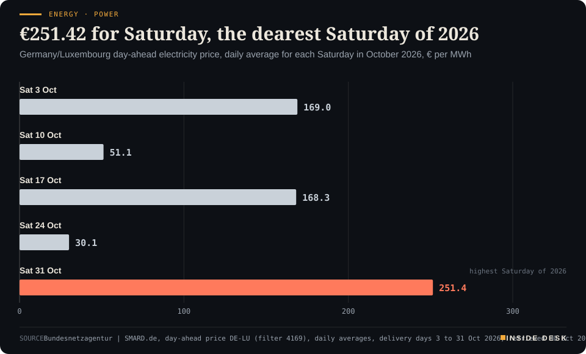
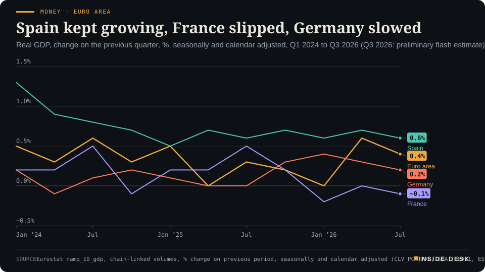
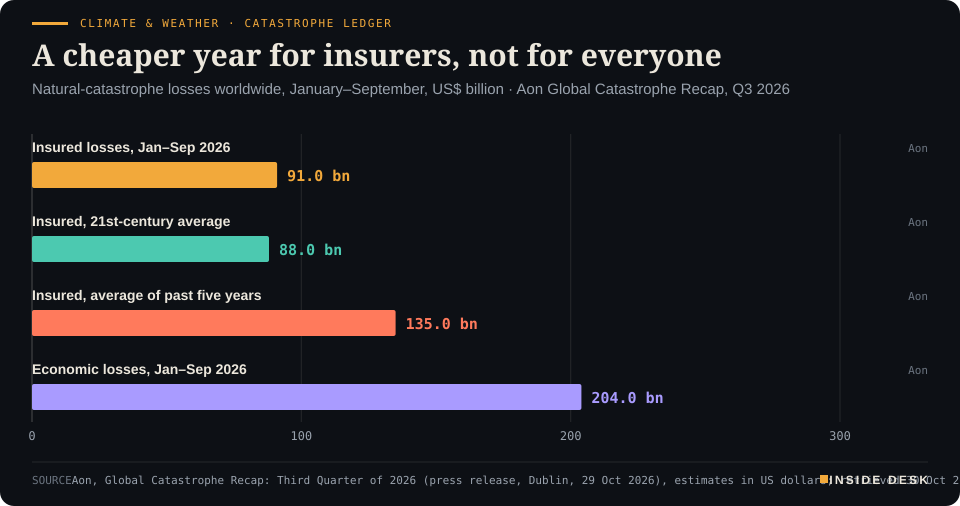

Inside Desk ePaper, Evening ePaper · Fri 30 Oct 2026
Friday, 30 October 2026Always free
Inside Desk
Evening ePaperPublished 17:30 CET · Berlin
Lead · Security & Order
Moscow says Ukraine's refinery strikes are back, Dnipro spent the day in the dark, and Kyiv asked again for Patriot interceptors. Europe's answer this week came as contracts, and the contracts carry delivery dates.
Ukraine's refinery strikes resumed while NATO capitals signed orders that deliver years from now. France shrank 0.1% as the euro area grew 0.4%, German inflation eased to 2.8%, Saturday power costs €251.42 a megawatt hour, and three in four German hospitals ran a loss. Eleven desks, every number sourced.
Drones flew by the hour and armour was ordered by the decade, France shrank while its shoppers spent, and Germany's prices cooled even as Saturday's power got dear: the speeches ran fast, and the ledgers kept their own time.
Geo-economics · p. 6
Markets & Macro · p. 7
Energy & Industry · p. 11
Climate & Weather · p. 18
The day in one sentenceDrones flew by the hour and armour was ordered by the decade, France shrank while its shoppers spent, and Germany's prices cooled even as Saturday's power got dear: the speeches ran fast, and the ledgers kept their own time.
ContentsInside Desk · Evening ePaper30 October 2026
Ukraine's refinery strikes resumed while NATO capitals signed orders that deliver years from now. France shrank 0.1% as the euro area grew 0.4%, German inflation eased to 2.8%, Saturday power costs €251.42 a megawatt hour, and three in four German hospitals ran a loss. Eleven desks, every number sourced.
11 edition pieces · 11 desks · Published 17:30 CET, 30 October 2026
24 ePaper extras, added , 30 October. They appear only in the ePaper and carry their own time.
17:30 Evening ePaper, updated live until 22:30 with an “Updated” time and a Latest page
Sun 10:00 The Sunday Magazine
Berlin time. Every issue is free.
How to read it
Swipe, use the arrow keys or the page strip. Tap any headline for the reading view. Press / to search, t for contents, +/− to zoom. Download the PDF.
LatestInside Desk · Evening ePaper30 October 2026
Latest
Live: this page and the issue are updated until 22:30 Berlin time.
Markets: Wall Street closes October with the Nasdaq's worst day since June
Climate & Weather: In-fa has passed the Marianas and the typhoon warnings are cancelled
LeadInside Desk · Evening ePaper30 October 2026
Security & Order · Lead · 3 min
Moscow says Ukraine's refinery strikes are back, Dnipro spent the day in the dark, and Kyiv asked again for Patriot interceptors. Europe's answer this week came as contracts, and the contracts carry delivery dates.
This morning’s question was whether Ukraine had quietly paused its drone campaign against Russian refineries. By Friday lunchtime Moscow had answered it, in a single sentence. “We had a lull that lasted a certain time, but today the attacks on oil refineries resumed,” Russia’s deputy prime minister for energy, Alexander Novak, told state television1. He said three refineries and one gas-chemical complex had been attacked overnight1. Kyiv had made no immediate comment1. A fire was reported at the Novokuibyshevsk refinery in Samara region, which CNBC says produced jet fuel for the Russian armed forces, and the regional governor said two men died after a drone attack while clearing up afterwards2,4. Russia’s defence ministry said its air defences had shot down more than 1,000 Ukrainian drones overnight1.
The traffic ran both ways. Ukraine’s air force said Russia launched ballistic missiles, four guided aerial missiles and 113 Shahed-type drones overnight, 83 of them jet-powered, and that three of the missiles and 96 of the drones were intercepted or suppressed3. It did not say how many ballistic missiles came or how many were stopped3. Desk arithmetic: 17 of the 113 drones were not reported as stopped, so about 85% were. That leaves out the ballistic missiles entirely, and they are the weapon that matters most.
That gap is the story Kyiv keeps telling. In his evening address President Volodymyr Zelenskyy said Ukraine had intelligence that Russia was preparing new ballistic missile attacks: “We need the capabilities to shoot down this Russian evil and are awaiting the decisions”2. CNBC describes an acute shortage of interceptors, particularly for Patriot systems2. The bill for the shortage arrived in Dnipropetrovsk region. About 350,000 people lost electricity overnight, and by Friday afternoon the regional governor said power had been restored to most of them but “more than 200,000 subscribers remain without power”1,3. The mayor of Dnipro asked residents to keep one or two days of water at home1. Across the country, regional authorities counted at least 27 dead and 127 injured over the past day, including the strike on the Dnipro railway platform3.
Now set this beside what Europe’s defence ministries did this week, because it was not nothing and it was not fast. On Thursday NATO’s secretary general, Mark Rutte, told the alliance’s national armaments directors in Brussels to “turn commitments into contracts” and to make sure that higher defence investment turns into military strength5. On Friday two such contracts surfaced. The Netherlands agreed with BAE Systems Hägglunds to buy more CV90 infantry fighting vehicles, budgeted at €1.3 billion, to equip a new armoured infantry battalion; the package includes spare parts, maintenance kits, ammunition and communications equipment, and it is being bought jointly through a Nordic programme led by Sweden6. And OCCAR, Europe’s joint procurement agency, ordered 69 more Schakal wheeled infantry fighting vehicles, 35 for the Bundeswehr and 34 for the Dutch army. That takes the programme to 291 vehicles7.
LeadInside Desk · Evening ePaper30 October 2026
Read the small print on the second contract. The Bundestag’s budget committee approved Germany’s share on 24 June 2026, and deliveries are scheduled between May 2032 and November 20337. Rheinmetall’s vehicle division head said exercising the options gives industry and its suppliers “greater insurance” for planning7. That is the honest virtue of contracts like this. They do not stop a drone over Dnipro tonight. They give factories in Germany and Sweden a reason to hire, buy steel and book shifts through to late 2033, and that is how capacity actually gets built.
So you are looking at two clocks running side by side. One counts hours: interceptors fired overnight, substations repaired by afternoon, a refinery fire seen from orbit by morning4. The other counts years: a committee approval in June, a joint order in October, vehicles rolling off the line in the early 2030s. Speeches tend to blur the two, so that a pledge sounds like a shipment. The useful habit is to ask each announcement which clock it belongs to.
On the first clock the news is grim, but at least it is countable: Ukrainian officials publish the casualties, the outages and the intercepts every day. On the second the news is better than the rhetoric around it. Alliances are signing purchase orders with delivery dates, spare parts and ammunition in the same package, and they are buying in groups rather than alone. Neither clock will be settled by what anyone says in Abu Dhabi next month. Both can be checked.
Geo-economicsInside Desk · Evening ePaper30 October 2026
Geo-economics · 2 min
Brent's December contract went out on a high after a limpet-style attack in Hormuz. The same contract also shows a spread the headline misses: the next month is about $5 cheaper.
The tanker was outbound in the Strait of Hormuz, 25 nautical miles north-east of Oman’s Khasab, when a small boat attached two explosive devices to its hull on Thursday, the UK Maritime Trade Operations centre said2. The blasts started a fire in the engine room and left the vessel temporarily immobilised2. By Friday UKMTO said the crew were safe, the fire was out, there was no environmental impact and the ship was continuing to its next port of call2. Nobody has said who did it2.
Oil reacted on the contract with the least time left. Brent futures for December, which expired on Friday, rose $2.50, or 2.2%, to $117.38 a barrel in early trade1. The more active January contract gained $1.39 to $112.19, and US WTI rose $2.04 to $104.091. Brent was on course to finish October 13% higher and WTI 15%, a fourth straight monthly gain1.
Desk arithmetic: the expiring December contract stood $5.19 above January. A front month that much dearer than the next one usually means buyers are paying for barrels they need now. It tells you less about where prices will be by Christmas.
Two other details from the same report are worth your attention. ExxonMobil and Chevron have cancelled plans for their executives to attend next week’s big oil show in the United Arab Emirates, according to two Reuters sources1. And Iran has received a letter from Vice President JD Vance but has not answered it, Iran’s semi-official Tasnim agency said1. One is a travel diary and the other an unanswered letter. Neither is a market forecast, but both say something about how safe the people who run the trade feel.
The tanker sailed on and the price went up, and both are true. The gauge to watch is the one the trade keeps for itself: whether ships keep their schedules. If a ship can be hit, put the fire out and still make its next port, the trade is under strain but still running. Nothing here is investment advice.
Geo-economics · Short item · ePaper extra, added
Brussels has set out how the second half of its Ukraine loan should be spent in 2027. Most of it goes to the defence industry, not the budget.
The EU’s Ukraine Support Loan is worth €90 billion up to the end of 2027, and half of it is meant to be paid out in 20261. On Friday the European Commission set up the framework for member states to approve the other €45 billion1. Ursula von der Leyen had announced the proposal on Thursday, in the same post in which she condemned the strike on Dnipro2.
The split is the interesting part. Of the 2027 money, €13.3 billion is to go in budget support and €31.7 billion to financing Ukraine’s defence industrial capacity1. Desk arithmetic: about 70% of next year’s tranche is earmarked for production rather than salaries and pensions.
Geo-economics · Brief · ePaper extra, added
PET spunbond is a polyester non-woven fabric used as a carrier for waterproofing, for example on roofs1. On Friday the Commission imposed definitive anti-dumping duties of 39.8% to 48.1% on imports from China for five years, replacing provisional duties of 45.6% to 50% in force since May1. Its investigation found dumped imports were harming EU producers in Germany, Italy and France, in a market worth €200m1.
A day earlier China’s commerce ministry said it would take “all necessary measures” if the EU extended its hybrid-vehicle understanding to other sectors such as chemicals2. The same spokesperson also said recent consultations had “made positive progress”2. Trade defence is rarely dramatic. It is an investigation, a finding and a percentage, and both sides are still talking.
Markets & MacroInside Desk · Evening ePaper30 October 2026
Markets & Macro · Podium vs Print · 2 min
France's economy minister says a budget will show investors that France is not heading for crisis. On the morning he said it, the bond market printed its own view.
Podium
“on a besoin d'un budget, on a besoin d'un déficit budgétaire à 5 % ou moins (we need a budget, we need a deficit of 5% or less)”
Roland Lescure, French minister of the economy and finance, on franceinfo, Friday 30 October 2026, morning, after INSEE's first estimate of third-quarter GDP
Print4.944%
Up 6 basis points after the preliminary GDP data, "underperforming the rest of the euro zone".
French 10-year government bond yield, as reported by Reuters, Friday 30 October 2026, after the GDP release
The podium. On Friday morning France learned that its economy shrank by 0.1% in the third quarter, after a flat second quarter and a 0.2% fall in the first1. Roland Lescure, the economy and finance minister, went on franceinfo and called the economy “à l’arrêt”, at a standstill, after an “unprecedented” mix of shocks, from the summer heatwave to the fuel prices driven by tension around the Strait of Hormuz1. Then he made his case: “We need a budget, we need a deficit of 5% or less. It is absolutely indispensable,” to find growth again and to reassure investors and firms that “France is not heading for crisis”1. Without that budget, he said, “on ira dans le mur”: we will hit the wall1.
The print. The bond market answered before lunch. France’s 10-year yield rose 6 basis points to 4.944% after the GDP figure, Reuters reported, underperforming the rest of the euro zone2. Analysts polled by Reuters had expected growth of 0.1%, not a fall2. Exports fell 1.7%, mostly because exports of transport equipment, chiefly aircraft, dropped 9.1% after a 20.8% jump in the spring; investment fell 0.6%2.
The gap. The minister and the market are not, in fact, disagreeing about the diagnosis. They disagree about the cure’s odds. …
Markets & Macro · Short item · ePaper extra, added
BP's profit nearly quadrupled on fuel margins. Its chief executive spent the morning talking about the day prices fall.
BP reported an underlying replacement-cost profit, its proxy for net profit, of $8.5 billion for the third quarter, against $2.2 billion a year earlier and an LSEG consensus of $6.19 billion1. The company credited gas and marketing trading and “significantly higher” refining margins1. Its refining indicator margin was $46.7 a barrel for the quarter, which chief executive Meg O’Neill called “incredibly strong” on CNBC1.
Where the money came from. Outages and damage at refineries, from the Russia–Ukraine war to the Middle East, have tightened fuel markets this year, so diesel, jet fuel and petrol have risen faster than crude1. Shell and TotalEnergies said on Thursday that their refining margins had also reached historically high levels1. For you at the pump, that margin is the gap between the price of a barrel and the price of a litre.
Where the money went. Operating cash flow for the first nine months was $28.55 billion, up from $16.89 billion; net debt fell to $13.87 billion from $26.05 billion1. Desk arithmetic: debt down by $12.18 billion, or 47%. O’Neill said BP will also set cash aside for the $5.9 billion it still owes over the 2010 Deepwater Horizon spill1.
The sentence worth keeping. “Oil prices today are strong. They will not always be strong,” O’Neill said, adding that margins are already softening a little as fourth-quarter demand drops off1. A chief executive paying down debt in a boom is the dull machinery doing its job. Nothing here is investment advice.
Markets & MacroInside Desk · Evening ePaper30 October 2026
Markets & Macro · Short item · ePaper extra, added
Wall Street closed October with its worst Nasdaq day since June. The shelves of soap and soft drinks did the opposite.
New York closed October on Friday with a sell-off in the shares that had carried the year. The Nasdaq Composite fell 2.86% to 25,437.00, its worst day since June, CNBC reported; the S&P 500 lost 1.82% to 7,580.07 and the Dow 1.09% to 51,770.311. Intel fell almost 29% after a weak outlook, and chipmakers such as AMD, Nvidia and Broadcom went down with it1.
The other half of the tape is the more useful half. Consumer staples and healthcare rose: Walmart and Coca-Cola each gained more than 1%, and a staples fund touched an all-time high1. For the month, the Nasdaq lost 5.3%, its steepest fall since March 2025, while the Dow added 1.7%1.
The pattern is an old one. When the question turns from what AI might earn to how it is paid for, money moves to companies whose invoices arrive every week. Nothing here is investment advice.
Markets & Macro · Brief · ePaper extra, added
Gold fell more than 1% on Friday morning and broke below $4,000 an ounce, XTB’s research desk reported; silver fell nearly 3%, to around $501. Oil went the other way. Front-month Brent futures were up 2.2% at $113.27 a barrel at midday, Sharecast reported, after another attack on a tanker in the Strait of Hormuz2. The Stoxx 600 was 0.1% lower at 648.23, a step back from Thursday’s seven-week closing high2.
The pairing is a small lesson. Gold is bought as a store of fear; oil is bought to be burned. On a day when a strait is still dangerous, the commodity tied to an actual delivery rose. Nothing here is investment advice.
Politics & InstitutionsInside Desk · Evening ePaper30 October 2026
Politics & Institutions · 2 min
Israel's final count is out and the party leaders spent Friday saying whom they will not sit with. Add up the refusals and the 120 seats get very small, very fast.
The final results confirmed what the count had been saying all week. Benjamin Netanyahu’s bloc has 53 of the Knesset’s 120 seats, Gadi Eisenkot’s opposition bloc 48, and the two Arab-led lists, Ra’am and the Joint List, a record combined 191,2. Likud is the largest party with 27, ahead of Eisenkot’s Yashar with 21 and Naftali Bennett’s B’Yachad with 122. Sixty-one makes a majority1.
Friday was a day of refusals. “It is forbidden to form a government with them,” Netanyahu posted, about the Arab-led parties1. Avigdor Liberman, on the opposition side, put it as “Neither Bibi nor Tibi”, ruling out both Netanyahu and Ahmad Tibi of the Joint List1, and later said: “We will not sit with supporters of terror”2. Shas leader Aryeh Deri ruled out joining an opposition-bloc government without Likud2. Meanwhile Netanyahu met Itamar Ben-Gvir and Bezalel Smotrich, and the opposition held separate talks of its own2.
Desk arithmetic: Netanyahu’s bloc needs 8 more seats; Eisenkot’s needs 13. The only block large enough to close the opposition’s gap on its own is the 19 Arab-led seats, which the loudest voices on both sides have just ruled out. Netanyahu’s route runs through persuading parts of the opposition to cross, and analysts quoted by Al Jazeera say Bennett and Liberman do not currently look willing1.
The cracks are where you would expect. Ra’am has indicated it is open to joining an Eisenkot-led government, analysts say, and the Joint List has left open supporting a minority government from outside1. Eisenkot has set conditions for partners, including recognising Israel as a Jewish and democratic state, without saying whether the Arab-led parties meet them1. Rabbi Dov Landau, a senior ultra-Orthodox figure, said: “We are not in anyone’s bloc”2.
For you, the sensible reading is patience. …
Politics & Institutions · Short item · ePaper extra, added
Russia's best-known independent newspaper has announced its closure, citing pressure from the authorities. Its founder calls it part of the war.
“Novaya Gazeta is ceasing to exist,” editor-in-chief Sergei Sokolov said in a statement on YouTube on Friday. “The Russian authorities – the Russian special services – have forced the editorial team to end its work”1. This was the newspaper of the murdered journalist Anna Politkovskaya, and Russian authorities class it as a “foreign agent”, a label France 24 describes as a tool used to stifle dissent1.
Dmitry Muratov, the paper’s founder and former editor and a joint winner of the 2021 Nobel Peace Prize, told AFP the paper had been “killed” because “we are staunch opponents of war in any form”1. …
Lithuania, Latvia and Estonia are among the NATO countries that Pentagon officials have, in recent weeks, asked to keep public statements about the Russian threat in check, four people familiar with the matter told Reuters1. One said the Pentagon policy chief, Elbridge Colby, told a Baltic official there should be no “poking” of Russia1. Another European official summed up the message as: “We are helping you. The Americans are there. Just don’t be loud. Don’t make noise”1. None of the sources described the exchanges as confrontational1.
“Private conversations among allies are just that,” a Pentagon official said1. The Baltic defence ministries did not respond and NATO declined to comment1. Tone is a matter for allies to settle among themselves. What you can check is the alliance’s ledger of contracts, troop posture and exercises, and that ledger does not change with the volume of a speech.
Psychology & BehaviourInside Desk · Evening ePaper30 October 2026
Psychology & Behaviour · 2 min
An Australian team proposes a 'circadian' form of depression. The careful part of the story is how many of the researchers' own colleagues say: not yet.
The clocks went back in Europe last Sunday, and the evenings have turned dark. A good week, then, for a study about the body clock and mood, and a good week to read it slowly.
The claim. Researchers at the University of Sydney’s Brain and Mind Centre, writing in the British Journal of Psychiatry, propose that some people have “circadian” depression, in which a disrupted body clock is a core feature, National Geographic reported on Friday1. Their test is six self-reported traits: seasonal mood swings, late sleep, being a night owl, oversleeping, waking up very tired, and “social jet lag”, the gap between weekday and weekend sleep. Anyone with at least three counts1. Of a cohort of more than 11,000 people, about a quarter fitted1. Their depression tended to start earlier and to be more severe, and they were more likely to say antidepressants had not worked well1.
The caveats, from the people themselves. The traits were self-reported, with no wearable data or melatonin measurements to confirm a disrupted clock1. Co-author Jacob Crouse concedes the poor response to drugs might have other causes1. David Curtis of the UCL Genetics Institute says the checklist may simply pick out more severe depression, and that a poor response to one drug “doesn’t mean they’ll respond better to a different treatment at all”1. Whether the clock drives the low mood, or the low mood scrambles the clock, is still open1.
What is already known. A 2025 review cited in the report found that among more than 800 people with depression that was not seasonal, more than 40% reached remission with bright light therapy, against 25% in the control group; the evidence for melatonin is weaker1. The Sydney team is now running a melatonin trial in young adults who fit the profile1.
For you. You don’t need a new diagnosis to use an old remedy: morning daylight, a steady bedtime and a weekend that does not run three hours late are cheap and safe. If low mood has lasted weeks, the right first step is still a GP, not a checklist.
Psychology & Behaviour · Short item · ePaper extra, added
A Dutch trial of schema therapy for anxious personality disorders found faster relief than specialist usual care. The quieter result is who stayed in treatment.
Fear of criticism, a strong need to lean on others, a rigid drive for order: when such lifelong patterns get in the way of work and love, they can be diagnosed as “cluster C” personality disorders. They account for up to 30% of patients in mental-health services but draw far less research than borderline disorder, Psychreg reports1.
The trial. Researchers at the University of Amsterdam and ten Dutch mental-health centres randomly assigned 369 outpatients, most with avoidant personality disorder, to group schema therapy (30 weekly sessions of 90 minutes), individual schema therapy (50 sessions) or specialist usual care, according to the trial published in BMJ Mental Health1. …
Researchers at Beijing Normal University followed 1,977 seventh-graders, average age 12.7, at a rural middle school in China; 1,911 were seen again a year later, Medscape reports of a study in the Journal of Adolescent Health1. Teenagers who said their parents gave them information, talked about puberty and offered emotional support had fewer depressive symptoms at follow-up, whatever the timing of their puberty1. Among girls, early puberty was linked with more symptoms only when parental support was low1.
The effects were small, the support scale had only three items and all pupils came from one low-income school1. Still, the authors suggest clinicians could give parents brief guidance on normalising bodily changes1. One awkward conversation is a modest price.
Energy & IndustryInside Desk · Evening ePaper30 October 2026
Energy & Industry · 2 min
Friday's auction has priced Saturday's power. It is the dearest Saturday of the year by a distance, and eight times last Saturday's bill.
Weekends are usually where German power gets cheap. Factories idle, offices empty, and the auction clears lower. Not this one. Friday’s day-ahead auction priced Saturday 31 October at an average of €251.42 per megawatt hour for Germany and Luxembourg, according to the Bundesnetzagentur’s SMARD figures1.
Energy · Power€251.42 for Saturday, the dearest Saturday of 2026Germany/Luxembourg day-ahead electricity price, daily average for each Saturday in October 2026, € per MWh

Bar chart of the daily average German-Luxembourg day-ahead electricity price on each Saturday of October 2026, in euros per megawatt hour. Saturday 3 October was €169.01, 10 October €51.08, 17 October €168.27 and 24 October €30.12. The latest value, for delivery on Saturday 31 October, is €251.42, the highest for any Saturday in 2026.
Source: Bundesnetzagentur | SMARD.de, day-ahead price DE-LU (filter 4169), daily averages, delivery days 3 to 31 Oct 2026, retrieved 30 Oct 2026, 16:30 CET · CC BY 4.0 · CSV
The comparison. Last Saturday, 24 October, cost €30.12, on a day when onshore wind turbines generated 1,009.2 gigawatt hours1. Desk arithmetic: this Saturday is a little over eight times that. Across 2026, no Saturday has come close: the next-dearest was 3 October at €169.011. Saturday is also the fourth-dearest delivery day of the whole year so far, behind Thursday’s €314.85, Friday’s €268.62 and 14 September’s €256.551.
The shape of the day. The cheapest hour on Saturday is 12:00 to 13:00 CET, at €220.25, and the dearest is 18:00 to 19:00 CET, at €298.971. Desk arithmetic: Saturday is €17.20 cheaper than Friday on average, so the weekend discount is there, just very small.
Energy & Industry · Short item · ePaper extra, added
Europe's gas benchmark climbed again on Friday. The number to watch is not the price but the level in the tanks, and the weather that will draw them down.
December is now the front month, and on its first day in the headline it rose. Dutch TTF futures for December delivery were up 4.9% at €102.78 per megawatt hour on Friday, CNBC reported; a separate ICE-based report had them at €102.851,2. That is the highest level in almost four years, and about 36% up on the month, CNBC said, citing Trading Economics1.
Energy & Industry · Brief · ePaper extra, added
Gas got the attention this week, but lignite did the heavy lifting. On Thursday 29 October, the year’s dearest power day, German lignite plants generated 295.3 gigawatt hours, against 283.3 GWh from gas, according to SMARD’s provisional figures1. On Monday lignite had generated 162.1 GWh1. Desk arithmetic: an increase of about 82% in three days, while onshore and offshore wind together fell from about 826 GWh to about 109 GWh1.
The point is dull and important: on windless days, brown coal is still one of the machines Germany turns up when the turbines stop. Thursday’s figures are provisional and may be revised; the next update appears on SMARD1.
Money, FX & CommitteesInside Desk · Evening ePaper30 October 2026
Money, FX & Committees · 2 min
Europe's statisticians handed in their third quarter on schedule. The total held up better than forecast; the parts tell four different stories.
The euro area grew by 0.4% in the third quarter, Eurostat’s preliminary flash estimate showed on Friday, after 0.6% in the second1. On the year, output was 1.3% higher, after 1.2%1. Sharecast notes that the consensus for the annual rate had been 1.1%, and that it is the strongest annual pace since the second quarter of 20254. The estimate rests on 19 member states covering 96% of euro-area output, and Eurostat warns that its sources are incomplete1.
Money · Euro areaSpain kept growing, France slipped, Germany slowedReal GDP, change on the previous quarter, %, seasonally and calendar adjusted, Q1 2024 to Q3 2026 (Q3 2026: preliminary flash estimate)

Line chart of quarterly real GDP growth on the previous quarter from Q1 2024 to Q3 2026 for the euro area, Spain, Germany and France. Spain grows every quarter, between 0.5% and 1.3%, and is 0.6% in Q3 2026, the latest value. The euro area moves between 0.0% and 0.6% and is 0.4% in Q3 2026, after 0.6% in Q2. Germany moves between -0.1% and 0.4% and is 0.2% in Q3 2026, after 0.3%. France falls below zero in Q4 2024 (-0.1%) and Q1 2026 (-0.2%), is 0.0% in Q2 2026 and -0.1% in Q3 2026, the latest value. Q3 2026 figures are a preliminary flash estimate and may be revised on 13 November 2026.
Source: Eurostat namq_10_gdp, chain-linked volumes, % change on previous period, seasonally and calendar adjusted (CLV_PCH_PRE, SCA), EA21, ES, DE, FR, dataset updated 30 Oct 2026 11:00 CET with the preliminary flash estimate for Q3 2026 (CC BY 4.0) · retrieved 30 Oct 2026 · CSV
Four stories in one total. Spain grew 0.6% on the quarter, and has grown in every quarter since the start of 20241,5. Germany grew 0.2%, after 0.3%1. Italy was flat1. France shrank by 0.1%, its third quarter in a row without growth: -0.2%, 0.0%, -0.1%1. …
Money, FX & Committees · Short item · ePaper extra, added
Germany's autumn upturn in jobs came, but weakly. The useful numbers are the ones under the headline.
Germany had 2,955,000 people registered as unemployed in October, 40,000 fewer than in September, the Federal Employment Agency (BA) said on Friday1. The rate fell 0.1 points to 6.3%1. That is the usual autumn upturn, and the BA’s own headline calls it weak1. Adjusted for the season, unemployment rose by 4,000; on the year it was 44,000 higher1.
“The economic conditions are still not sufficient for an improvement in the labour market,” said the BA’s chair, Andrea Nahles1. That is a plain sentence from an institution that does not need to sell anything.
Under the headline. The broader measure of underemployment, which also counts people in schemes and on short-term sick leave, fell by a seasonally adjusted 9,000, to 3,592,0001. Firms notified short-time work for 22,000 people between 1 and 26 October1. In August, the latest month with actual figures, short-time pay went to 98,000 workers, 20,000 fewer than in July and about 66,000 fewer than a year earlier1. Employers had 654,000 vacancies registered, 31,000 more than a year ago1.
The other side of the payroll. Unemployment benefit went to 1,065,000 people, 88,000 more than a year earlier, while people on basic income support able to work fell by 172,000, to 3,659,0001. Desk arithmetic: more people drawing the insurance they paid into, fewer on the last-resort safety net. A labour market that is soft but not breaking looks like that. Nothing here is investment advice.
Money, FX & CommitteesInside Desk · Evening ePaper30 October 2026
Money, FX & Committees · Brief · ePaper extra, added
On the harmonised measure used for euro-area comparisons, Germany’s inflation fell to 2.8% in October, from 3.3% in September1,4. France’s rose to 3.8%, above the 3.6% analysts polled by Reuters expected, from 3.4%2,4. Italy’s jumped to 5.6%, from 4.2%3. Istat puts most of the Italian rise on energy: regulated energy prices rose 59.5% on the year, against 25.8% in September3.
Desk arithmetic: the gap between the lowest and highest of the three widened from 0.9 points in September to 2.8 points in October. One currency, one central bank, and national energy bills that are set in very different ways. Eurostat publishes the euro-area flash on 4 November4. Nothing here is investment advice.
Ordinary & Inherited LifeInside Desk · Evening ePaper30 October 2026
Ordinary & Inherited Life · 2 min
Germany's October inflation fell to 2.8%. At the pump and on the heating-oil bill, the household's year looks different from the headline.
German consumer prices rose 2.8% on the year in October, Destatis said on Friday, down from 3.3% in September1. Month on month they fell 0.2%1. That is the line the news bulletins read out. The household ledger sits in the lines below it.
The kitchen. Food rose just 0.4% on the year, the same as in September; in August it was 0.1%1. Food carries a weight of about 105 in every 1,000 euros of the index basket1. For most households, the weekly shop is not where this year’s pressure is.
The tank and the boiler. Household energy and fuels rose 12.2% on the year, after 14.9% in September1. That line weighs about 74 in every 1,000 euros1. Desk arithmetic: energy weighs a little less than food, yet its 12.2% rise is about thirty times food’s 0.4%. Weighted, energy adds roughly 0.9 points to the headline and food about 0.04.
The pump, this week. ADAC’s latest weekly comparison found that the two fuels are moving apart2. Super E10 fell 2.6 cents in a week to a national average of €2.084 a litre; diesel rose 3.4 cents to €2.2892. Diesel now costs over 20 cents more than E102. The club blames dearer crude, a tight international diesel market and rising demand for heating oil as the colder season begins2. It also notes that petrol fell even as oil rose, which suggests there was room to cut2.
What you can do with that. ADAC’s own advice is dull and useful: fill up shortly before noon, when prices are lowest in the day, and compare the more than 14,000 stations in its app2. Desk arithmetic: on a 50-litre diesel fill, the 20.5-cent gap to E10 is €10.25, and the week’s 3.4-cent rise is €1.70. The headline rate fell this month. Whether your rate fell depends on whether you drive a diesel and heat with oil.
Ordinary & Inherited Life · Short item · ePaper extra, added
Italian inflation jumped to 5.4% in October. Istat's own basket of everyday purchases shows where a household feels it.
Italy’s national consumer price index rose 5.4% on the year in October, from 4.2% in September, Istat’s preliminary estimate showed on Friday1. Prices rose 0.9% in a single month1. Istat says the rate is back at its level of August 20231.
The trolley. Istat publishes a line known as the “carrello della spesa”, the shopping trolley: food, household cleaning and personal-care goods. It rose 2.5% on the year, up from 1.5%1. Items bought most often, the “high-frequency” basket, rose 5.8%, from 5.2%1.
The fresh shelf. Unprocessed food rose 7.5% on the year, up from 5.5%, and 1.8% in the month alone1. Processed food is still slightly cheaper than a year ago, at -0.2%, though the fall is fading1. Transport services rose 3.1%, from 1.6%1.
The bill behind it all. Energy rose 31.4% on the year, from 22.6%, and Istat links it to the international geopolitical situation1. …
Ordinary & Inherited Life · Brief · ePaper extra, added
France’s economy shrank by 0.1% in the third quarter, INSEE’s first estimate showed on Friday, against a 0.1% rise expected by analysts polled by Reuters1. The fall came mostly from exports, down 1.7%, with transport equipment, chiefly aerospace, down 9.1%1.
Households did the opposite. Their consumption rose 0.4% in the quarter, after 0.2% in the spring1. “Consumption of transport equipment is on the rise again, driven in particular by purchases of electric vehicles,” INSEE said1. One caution, from the same Reuters report: consumer spending fell more than expected in September itself, on manufactured goods and food1. A quarter of steady shopping does not guarantee the next. But the household ledger was not the one that broke.
Tech & ComputeInside Desk · Evening ePaper30 October 2026
Tech & Compute · 2 min
The press release had the record margin. The quarterly filing, published this morning, has the two longest columns in the building: what customers have promised to pay, and what Amazon has promised to pay others.
Amazon’s press release on Thursday told the story of a record quarter. Its Form 10-Q, accepted by the SEC on Thursday evening and public this morning, tells the story of contracts. Two tables in it deserve more attention than any slide.
What customers owe. Amazon says customers have committed to approximately $578 billion of future services under contracts longer than a year that it has not yet booked as revenue, “primarily related to AWS”, with an average remaining life of 6.1 years1. Some of it is large and named: in the first quarter AWS expanded its arrangement with OpenAI by $100.0 billion over eight years, and in the second it expanded its commitment with Anthropic by more than $100.0 billion over ten years1.
What Amazon owes. The other column is longer. Principal contractual commitments at the end of September totalled $883.6 billion, the filing shows, including $159.6 billion for property and equipment, $63.9 billion of it due in 2027, and $164.9 billion for leases that have not yet started1. Long-term debt rose from $65.6 billion at the end of 2025 to $173.1 billion1. Desk arithmetic: about 2.6 times as much in nine months. Interest expense in the quarter was $1.69 billion, against $538 million a year earlier1. The filing also describes a secured loan facility from suppliers of up to about $80.0 billion for technology infrastructure, available from early 20271.
Reading the two together. The columns are not a balance: the commitments include leases, debt interest and media rights, and the backlog depends on customers actually using what they signed for, as the filing itself says1. But they show the shape of the bet more honestly than a forecast does. Amazon is borrowing and signing now against revenue that is contracted, not yet earned.
For you. You don’t need an opinion on artificial intelligence to read this. You need two numbers and a date, and the company has to update all three every quarter. Apple, whose results come on Monday, will publish its own2. Nothing here is investment advice.
Tech & Compute · Short item · ePaper extra, added
Amazon's quarterly filing shows how much of this year's profit came from repricing a stake in another company, and why the third quarter looked weaker at the bottom line.
Two profit lines in Amazon’s third quarter went in opposite directions. Operating income rose to $28.1 billion from $17.4 billion; net income fell to $20.7 billion from $21.2 billion, according to the company’s Form 10-Q1. Desk arithmetic: up about 61% and down about 2%.
The gap. A year ago Amazon booked $7.2 billion of “upward adjustments” to its private stake in Anthropic, as the AI company raised money at higher prices1. This quarter the same line was $39 million1. Over nine months, though, those adjustments came to $62.9 billion, against income before tax of $147.6 billion1. …
Tech & Compute · Brief · ePaper extra, added
Data centres run on contracts as much as on chips. Amazon’s quarterly filing says that at the end of September it held energy contracts covering about 690 million megawatt hours that it must value at market prices, with a weighted-average remaining life of about 18 years; most of that power is to be delivered more than ten years from now1. Some contracts run 20 years1.
Because Amazon may settle in cash rather than take the power, these count as derivatives, and their revaluation produced unrealised gains of $91 million in the quarter, booked mainly against AWS1. Desk arithmetic: 690 million MWh is a little more than the 1.36 million MWh Germany’s grid used on Thursday2, multiplied by 500. The cloud’s electricity bill is being written decades ahead, and it is in the footnotes.
Health & CareInside Desk · Evening ePaper30 October 2026
Health & Care · 2 min
Roland Berger's annual hospital survey finds German clinics forecasting their losses better than ever. That is the worrying part.
The consultancy Roland Berger has published this year’s edition of its annual German hospital study, based on interviews with around 600 managing directors and medical directors1. The headline is a ledger, not a slogan. In 2025, 73% of hospitals were in the red, and at more than half of them (56%) the year-end deficit came to over 10% of revenue; at some it reached a quarter1.
Then comes the paradox. Hospitals have become much better at predicting their own results: 84% met the annual result set in their business plan in 2025, against roughly half in earlier years1. Roland Berger is blunt about why. “The higher hit rate is no sign of recovery,” the firm said (our translation, as are the quotes below); almost four in five loss-making hospitals met their plan because the losses had already been budgeted1. A target met is not the same as a business that lasts.
The reserves are thinning. Many hospitals have largely used theirs up, the study says, and co-author Jonas Hollacher expects the number of insolvencies “will probably rise sharply”1. Respondents expect the GKV contribution-rate stabilisation law, the government’s savings package for statutory health insurance, to cut their revenue by 7% on average1. More than one hospital in two is postponing investment to cope, said senior partner Peter Magunia, which helps results and cash in the short run but not for long1. The outlook is grey: about two-thirds expect worse results and weaker liquidity through 2029, and only one in four expects an improvement by 20311.
Read it the stubborn way. This is a survey of managers, not an audit, and those who run institutions have reasons to sound alarmed before a savings package. …
Health & Care · Short item · ePaper extra, added
The RKI's weekly respiratory report shows a moderate cold season, low flu and Covid, and the first slow rise in both. That is the timetable, not an alarm.
Germany’s respiratory season has started the way it usually does: with the common cold. The Robert Koch-Institut’s weekly report for 19 to 25 October puts acute respiratory illness at a moderate level in the population and in GP surgeries, and at a low level in hospitals1. Activity has been fairly stable since the beginning of October1.
The viruses doing the work are the unglamorous ones. Of 76 sentinel samples sent to the national influenza reference centre, 50 contained respiratory viruses, mostly rhino- and enteroviruses (43%), then parainfluenza viruses (14%) and adenoviruses (7%)1. Influenza and SARS-CoV-2 were each found in 3% of samples; RSV was not detected at all1. Among hospital patients with severe acute respiratory infections, 2% each had a flu or Covid diagnosis, and fewer than 1% RSV1.
Health & Care · Brief · ePaper extra, added
A Norwegian group reports in The Lancet that people with irritable bowel syndrome do not seem to benefit from a faecal transplant meant to renew the gut microbiome1. In the REFIT2 trial at five hospitals, 448 adults with moderate-to-severe IBS were analysed; at 90 days, 40% of those given donor stool and 38% of those given their own stool as placebo improved by at least 75 points on the symptom score, a difference that was not significant2. At one year it was 44% against 45%2.
The donor microbes did take hold, shifting recipients’ gut profiles towards their donor’s; it simply did not relieve symptoms, and no “super donor” stood out2. A 2024 US gastroenterology guideline already advises against conventional transplants for IBS outside trials2. If a clinic offers you one for IBS, ask for the trial it is part of.
Security & OrderInside Desk · Evening ePaper30 October 2026
Security & Order · Short item · ePaper extra, added
The evacuation from the occupied town has begun under the local truce. Kyiv gave a head count to parliament and then took it back. That is not a failure; it is a ledger being kept honestly.
This morning the mines on the road to Oleshky had been cleared. By Friday afternoon people were on the buses. “Evacuation and distribution of humanitarian aid have begun,” Ukrainian negotiator David Arakhamia said, while Russia’s human rights ombudsman posted video of residents waiting to board1. A convoy crossed from Kherson region into Crimea, witnesses said, and Arakhamia later wrote that evacuees had left for the Russian city of Anapa with a Ukrainian delegation, to fly on to Belarus and come back into Ukraine by bus1.
It is a long way round for people going home, and that is the plain cost of a truce that covers one town and nothing else.
The figures deserve the same care. Ukraine’s prime minister, Sergiy Koretskyi, told parliament that 527 people would be brought to Kyiv-controlled territory, then withdrew the number: “There are no exact figures at the moment. The rescue operation is ongoing, and the data is changing”1. Officials on both sides say some residents may choose to stay1. The town had 24,000 people before the war and about 2,000 now1.
The truce itself has held. Kherson’s regional governor reported no shelling or strikes on civilian or critical infrastructure over the past day, though one person was injured by a Russian mine2. The Kremlin, for its part, highlighted the high level of coordination between the two sides’ rights commissioners1.
For you, the thing to watch is dull and decisive. Does every bus that left Oleshky arrive at the Ukrainian border, and do the published figures finally match the passenger lists?
Security & Order · Brief · ePaper extra, added
Kyiv, a city of around three million, has seen its bridges over the Dnipro hit by Russian drones again and again. Each strike stops the traffic and leaves people stuck in long queues1. On Friday the transport minister, Mykola Kalashnyk, told lawmakers the government had approved the “rapid construction of alternative bridge crossings over rivers, including across the Dnipro”1. “In total, the implementation of 21 bridge crossings is planned. Work in Kyiv has already begun,” he said, adding that the first would open at the beginning of the year1.
This is resilience in its least glamorous form: a second way across, built before the first one fails. It will never make a headline the way an intercept does. But when a bridge is closed on a weekday morning, a spare one is what keeps the bus running.
Climate & WeatherInside Desk · Evening ePaper30 October 2026
Climate & Weather · 2 min
Aon's nine-month catastrophe tally is the lowest since 2019. The number that matters for you is the gap underneath it.
The broker Aon has done the year’s sums so far, and they are calmer than the headlines of the summer suggested. Insured losses from natural disasters reached an estimated $91 billion in the first nine months of 20261. That is slightly above the 21st-century average of $88 billion, the lowest for the period since 2019, and well below the $135 billion average of the past five years1. The third quarter alone cost insurers $29 billion, 31% below the long-term average, and no single event cost them more than $10 billion2.
Quiet totals hide busy ledgers. Twenty-three events produced insured losses of at least $1 billion each, against a historical average of 141. Severe convective storms, the hail, wind and tornado kind, were again the costliest peril, accounting for roughly $55 billion of insured losses2. The costliest insured event of the year so far was not a hurricane but Europe’s drought, at more than $8.5 billion; France alone recorded about $5 billion in insured losses, a record1. Subsidence is a slow peril: it cracks a wall one dry summer at a time.
Climate & Weather · Short item · ePaper extra, added
Ten days before COP31 opens in Antalya, the African Group wants the adaptation-finance sum on the agenda. Expect a row about the agenda before a row about the money.
At COP30 last year, governments agreed to “at least triple” finance for climate adaptation in developing countries by 20351. The last-minute deal left out the parts an accountant would ask for first: the baseline year, a headline amount, who pays and how the money is delivered1.
Ghana, which chairs the African Group of Negotiators this year, has now written to UN climate chief Simon Stiell asking for three extra agenda items at COP31, which opens in Antalya on 9 November: tripling adaptation finance, trade and climate change, and the financing arrangements of the Green Climate Fund1. “A dedicated item is needed,” the group’s chair, Antwi-Boasiako Amoah, wrote1. At June’s talks in Bonn, wealthy countries led by the EU, the UK and Japan opposed anchoring the target in the adaptation negotiations, and diplomats left without agreement1.
The least-developed countries want the goal defined as $120 billion a year by 2030, which would triple an earlier target of around $40 billion that was due in 2025 and has likely been missed1. Their lead finance negotiator called adaptation finance “a homeless issue”1. The EU’s agreed position reaffirms the tripling but folds it into the broader post-2025 finance goal, while some donors, including Germany and France, have cut aid budgets1. In May the UK told the Green Climate Fund it would deliver only half of its £1.62 billion pledge1.
Any government can object to extra agenda items, and disputed ones usually go to consultations run by the presidency1. That sounds like procedure. It is: a target without a baseline is a promise, and a baseline is where it becomes an invoice.
Climate & WeatherInside Desk · Evening ePaper30 October 2026
Climate & Weather · Short item · ePaper extra, added
In-fa crossed Agrihan and the warnings came down. The storm is still Category 4; it is simply somewhere else now.
This morning’s ePaper had In-fa heading over Agrihan. It went over it, and this evening the paperwork caught up. The typhoon warnings for Alamagan, Pagan and Agrihan were cancelled at 2 a.m. local time on Saturday, 17:00 in Berlin1. The weather service’s latest local statement says the storm “has passed over Agrihan” and has moved far enough away for the warnings to end2.
At 16:00 Berlin time the centre was about 140 miles north-west of Agrihan, moving west-north-west at 22 mph1. Peak sustained winds have eased to 140 mph, from 145 mph three hours earlier1,3. That is still Category 4, and the forecasters expect it to hold that strength through Saturday night before weakening gradually1,2.
The next part is the odd one. In-fa is expected to turn north and slow sharply, then make a loop as its motion becomes “slow and erratic” west of the Marianas1. A stalled storm over open water is mainly a problem for shipping and for Iwo To, about 370 miles to the north-north-west1. For the islands, the statement still asks people to stay sheltered until the all clear is given locally2. Cancelling a warning is a forecast; the clear-up is an inventory, and that starts at first light.
Climate & Weather · Brief · ePaper extra, added
Subpolar maritime air and high pressure set Germany’s weather for now, the Deutscher Wetterdienst says1. Tonight brings patchy dense fog with visibility below 150 metres, and light frost down to -2 degrees at the Alpine edge and in some upland hollows1. On the High Black Forest summits, an easterly wind can gust to 70 km/h, at times around 80 km/h1.
Saturday stays largely cloudy and foggy, at 6 to 13 degrees, with drizzle on the northern edge of the eastern uplands1. From Saturday night into Sunday morning, snow is expected in the Alps and the Bavarian Forest, with the snow line falling to about 1,000 metres; a few centimetres are possible above it, amounts still uncertain1. On the night into Monday, lows fall to between 5 and -2 degrees away from the northwest, lower on high ground, with ice in places1. Leave five minutes for the windscreen, and dip the headlights in the fog.
Charts and dataInside Desk · Evening ePaper30 October 2026
Charts and data
Money · Euro areaSpain kept growing, France slipped, Germany slowedReal GDP, change on the previous quarter, %, seasonally and calendar adjusted, Q1 2024 to Q3 2026 (Q3 2026: preliminary flash estimate)
Line chart of quarterly real GDP growth on the previous quarter from Q1 2024 to Q3 2026 for the euro area, Spain, Germany and France. Spain grows every quarter, between 0.5% and 1.3%, and is 0.6% in Q3 2026, the latest value. The euro area moves between 0.0% and 0.6% and is 0.4% in Q3 2026, after 0.6% in Q2. Germany moves between -0.1% and 0.4% and is 0.2% in Q3 2026, after 0.3%. France falls below zero in Q4 2024 (-0.1%) and Q1 2026 (-0.2%), is 0.0% in Q2 2026 and -0.1% in Q3 2026, the latest value. Q3 2026 figures are a preliminary flash estimate and may be revised on 13 November 2026.
Source: Eurostat namq_10_gdp, chain-linked volumes, % change on previous period, seasonally and calendar adjusted (CLV_PCH_PRE, SCA), EA21, ES, DE, FR, dataset updated 30 Oct 2026 11:00 CET with the preliminary flash estimate for Q3 2026 (CC BY 4.0) · retrieved 30 Oct 2026 · CSV
Latest values
Series
Value
Date
Chart
Euro area
0.4%
1 Jul 2026
Spain kept growing, France slipped, Germany slowed
Spain
0.6%
1 Jul 2026
Spain kept growing, France slipped, Germany slowed
Germany
0.2%
1 Jul 2026
Spain kept growing, France slipped, Germany slowed
France
-0.1%
1 Jul 2026
Spain kept growing, France slipped, Germany slowed
Last data point of each series in the charts above, from the Inside Desk data archive. Sources under each chart.
Back pageInside Desk · Evening ePaper30 October 2026
Before you close the tab
The day in one sentence
Drones flew by the hour and armour was ordered by the decade, France shrank while its shoppers spent, and Germany's prices cooled even as Saturday's power got dear: the speeches ran fast, and the ledgers kept their own time.
One thing you can do this week
The clocks went back last weekend, and the dark now arrives before most people leave work. This week, pick one fixed time for the lights out and the phone down, and keep it on Saturday as well as Tuesday. A study in today's Psych note links a late-running body clock to a kind of tiredness that does not lift; you do not need a diagnosis to give your own clock a regular appointment.
A habit, not advice.
What went right
The Green Climate Fund's board ended its meeting in Songdo with the largest approval it has ever made: $1.97 billion for 21 projects 1. That takes the fund's approvals for 2026 to $3.3 billion, a second record year running, and a third of the money (34%) will flow through national and regional institutions 1. Algeria, Cameroon, Moldova and Yemen get their first single-country projects, and reviews took six months on average against a nine-month target 1. Faster paperwork is how a pledge reaches a field.
In euros at home
A litre of diesel cost €2.289 on the German national average this week, against €2.084 for Super E10, the ADAC reports, so diesel is 20.5 cents dearer 2. Diesel rose 3.4 cents in a week while E10 fell 2.6 cents 2. Desk arithmetic: a 50-litre diesel fill costs about €10.25 more than the same fill of E10, and the week's rise alone adds about €1.70.
Desk arithmetic on the cited national averages. Prices differ by station, region and time of day. Nothing here is advice.
Small words
Preliminary flash estimate
The first official reading of how much an economy grew, published about a month after the quarter ends from incomplete data. It is designed to be early rather than final, and later releases revise it. Today's euro-area flash put growth at 0.4% for the third quarter 3.
Commentary for information only. Not investment, legal, tax, medical or political advice. Inside Desk is free and reader-supported. Every number is sourced in the piece it appears in.
This issue has been updated.
All articles in this edition
Security & Order · 3 min read
The lull ended in one sentence; the vehicles arrive in 2033
Moscow says Ukraine's refinery strikes are back, Dnipro spent the day in the dark, and Kyiv asked again for Patriot interceptors. Europe's answer this week came as contracts, and the contracts carry delivery dates.
This morning’s question was whether Ukraine had quietly paused its drone campaign against Russian refineries. By Friday lunchtime Moscow had answered it, in a single sentence. “We had a lull that lasted a certain time, but today the attacks on oil refineries resumed,” Russia’s deputy prime minister for energy, Alexander Novak, told state television1. He said three refineries and one gas-chemical complex had been attacked overnight1. Kyiv had made no immediate comment1. A fire was reported at the Novokuibyshevsk refinery in Samara region, which CNBC says produced jet fuel for the Russian armed forces, and the regional governor said two men died after a drone attack while clearing up afterwards2,4. Russia’s defence ministry said its air defences had shot down more than 1,000 Ukrainian drones overnight1.
The traffic ran both ways. Ukraine’s air force said Russia launched ballistic missiles, four guided aerial missiles and 113 Shahed-type drones overnight, 83 of them jet-powered, and that three of the missiles and 96 of the drones were intercepted or suppressed3. It did not say how many ballistic missiles came or how many were stopped3. Desk arithmetic: 17 of the 113 drones were not reported as stopped, so about 85% were. That leaves out the ballistic missiles entirely, and they are the weapon that matters most.
That gap is the story Kyiv keeps telling. In his evening address President Volodymyr Zelenskyy said Ukraine had intelligence that Russia was preparing new ballistic missile attacks: “We need the capabilities to shoot down this Russian evil and are awaiting the decisions”2. CNBC describes an acute shortage of interceptors, particularly for Patriot systems2. The bill for the shortage arrived in Dnipropetrovsk region. About 350,000 people lost electricity overnight, and by Friday afternoon the regional governor said power had been restored to most of them but “more than 200,000 subscribers remain without power”1,3. The mayor of Dnipro asked residents to keep one or two days of water at home1. Across the country, regional authorities counted at least 27 dead and 127 injured over the past day, including the strike on the Dnipro railway platform3.
Now set this beside what Europe’s defence ministries did this week, because it was not nothing and it was not fast. On Thursday NATO’s secretary general, Mark Rutte, told the alliance’s national armaments directors in Brussels to “turn commitments into contracts” and to make sure that higher defence investment turns into military strength5. On Friday two such contracts surfaced. The Netherlands agreed with BAE Systems Hägglunds to buy more CV90 infantry fighting vehicles, budgeted at €1.3 billion, to equip a new armoured infantry battalion; the package includes spare parts, maintenance kits, ammunition and communications equipment, and it is being bought jointly through a Nordic programme led by Sweden6. And OCCAR, Europe’s joint procurement agency, ordered 69 more Schakal wheeled infantry fighting vehicles, 35 for the Bundeswehr and 34 for the Dutch army. That takes the programme to 291 vehicles7.
Read the small print on the second contract. The Bundestag’s budget committee approved Germany’s share on 24 June 2026, and deliveries are scheduled between May 2032 and November 20337. Rheinmetall’s vehicle division head said exercising the options gives industry and its suppliers “greater insurance” for planning7. That is the honest virtue of contracts like this. They do not stop a drone over Dnipro tonight. They give factories in Germany and Sweden a reason to hire, buy steel and book shifts through to late 2033, and that is how capacity actually gets built.
So you are looking at two clocks running side by side. One counts hours: interceptors fired overnight, substations repaired by afternoon, a refinery fire seen from orbit by morning4. The other counts years: a committee approval in June, a joint order in October, vehicles rolling off the line in the early 2030s. Speeches tend to blur the two, so that a pledge sounds like a shipment. The useful habit is to ask each announcement which clock it belongs to.
On the first clock the news is grim, but at least it is countable: Ukrainian officials publish the casualties, the outages and the intercepts every day. On the second the news is better than the rhetoric around it. Alliances are signing purchase orders with delivery dates, spare parts and ammunition in the same package, and they are buying in groups rather than alone. Neither clock will be settled by what anyone says in Abu Dhabi next month. Both can be checked.
Desk comment A speech can be given in an afternoon. A brigade is equipped in years. Only one of them shows up on an invoice.
$117.38 on expiry day, and a tanker that kept sailing
Brent's December contract went out on a high after a limpet-style attack in Hormuz. The same contract also shows a spread the headline misses: the next month is about $5 cheaper.
The tanker was outbound in the Strait of Hormuz, 25 nautical miles north-east of Oman’s Khasab, when a small boat attached two explosive devices to its hull on Thursday, the UK Maritime Trade Operations centre said2. The blasts started a fire in the engine room and left the vessel temporarily immobilised2. By Friday UKMTO said the crew were safe, the fire was out, there was no environmental impact and the ship was continuing to its next port of call2. Nobody has said who did it2.
Oil reacted on the contract with the least time left. Brent futures for December, which expired on Friday, rose $2.50, or 2.2%, to $117.38 a barrel in early trade1. The more active January contract gained $1.39 to $112.19, and US WTI rose $2.04 to $104.091. Brent was on course to finish October 13% higher and WTI 15%, a fourth straight monthly gain1.
Desk arithmetic: the expiring December contract stood $5.19 above January. A front month that much dearer than the next one usually means buyers are paying for barrels they need now. It tells you less about where prices will be by Christmas.
Two other details from the same report are worth your attention. ExxonMobil and Chevron have cancelled plans for their executives to attend next week’s big oil show in the United Arab Emirates, according to two Reuters sources1. And Iran has received a letter from Vice President JD Vance but has not answered it, Iran’s semi-official Tasnim agency said1. One is a travel diary and the other an unanswered letter. Neither is a market forecast, but both say something about how safe the people who run the trade feel.
The tanker sailed on and the price went up, and both are true. The gauge to watch is the one the trade keeps for itself: whether ships keep their schedules. If a ship can be hit, put the fire out and still make its next port, the trade is under strain but still running. Nothing here is investment advice.
Desk comment The front month tells you how frightened the market is today. The month behind it tells you how long it expects the fright to last.
€45 billion, and €31.7 billion of it for factories
Brussels has set out how the second half of its Ukraine loan should be spent in 2027. Most of it goes to the defence industry, not the budget.
The EU’s Ukraine Support Loan is worth €90 billion up to the end of 2027, and half of it is meant to be paid out in 20261. On Friday the European Commission set up the framework for member states to approve the other €45 billion1. Ursula von der Leyen had announced the proposal on Thursday, in the same post in which she condemned the strike on Dnipro2.
The split is the interesting part. Of the 2027 money, €13.3 billion is to go in budget support and €31.7 billion to financing Ukraine’s defence industrial capacity1. Desk arithmetic: about 70% of next year’s tranche is earmarked for production rather than salaries and pensions.
“With today’s proposal, we are providing Ukraine with much-needed predictability and helping maintain essential public services,” von der Leyen said1. The Commission also gave Ukraine’s financing strategy a positive assessment1. The allocation still has to pass the EU’s approval procedures before any money moves2.
For you, the useful word is predictability. A ministry that knows in October what it can spend next year can sign contracts, pay suppliers on time and plan its winter repairs. A pledge can be undone with the next speech. An approved tranche with a written split is far harder to talk away, and that dull certainty is worth more than the headline figure.
Appears only in the ePaper · Commentary for information only. Not advice.
Geo-economics · Brief · ePaper extra, added
Up to 48.1% on a roofing fabric, and a warning from Beijing
Brussels has made duties on a €200 million Chinese product definitive. China says it will respond if the EU widens its restrictions.
PET spunbond is a polyester non-woven fabric used as a carrier for waterproofing, for example on roofs1. On Friday the Commission imposed definitive anti-dumping duties of 39.8% to 48.1% on imports from China for five years, replacing provisional duties of 45.6% to 50% in force since May1. Its investigation found dumped imports were harming EU producers in Germany, Italy and France, in a market worth €200m1.
A day earlier China’s commerce ministry said it would take “all necessary measures” if the EU extended its hybrid-vehicle understanding to other sectors such as chemicals2. The same spokesperson also said recent consultations had “made positive progress”2. Trade defence is rarely dramatic. It is an investigation, a finding and a percentage, and both sides are still talking.
Appears only in the ePaper · Commentary for information only. Not advice.
Markets & Macro · 2 min read
Podium vs Print: "we need a budget" and 4.944%
France's economy minister says a budget will show investors that France is not heading for crisis. On the morning he said it, the bond market printed its own view.
Podium
“on a besoin d'un budget, on a besoin d'un déficit budgétaire à 5 % ou moins (we need a budget, we need a deficit of 5% or less)”
Roland Lescure, French minister of the economy and finance, on franceinfo, Friday 30 October 2026, morning, after INSEE's first estimate of third-quarter GDP
Print4.944%
Up 6 basis points after the preliminary GDP data, "underperforming the rest of the euro zone".
French 10-year government bond yield, as reported by Reuters, Friday 30 October 2026, after the GDP release
The podium. On Friday morning France learned that its economy shrank by 0.1% in the third quarter, after a flat second quarter and a 0.2% fall in the first1. Roland Lescure, the economy and finance minister, went on franceinfo and called the economy “à l’arrêt”, at a standstill, after an “unprecedented” mix of shocks, from the summer heatwave to the fuel prices driven by tension around the Strait of Hormuz1. Then he made his case: “We need a budget, we need a deficit of 5% or less. It is absolutely indispensable,” to find growth again and to reassure investors and firms that “France is not heading for crisis”1. Without that budget, he said, “on ira dans le mur”: we will hit the wall1.
The print. The bond market answered before lunch. France’s 10-year yield rose 6 basis points to 4.944% after the GDP figure, Reuters reported, underperforming the rest of the euro zone2. Analysts polled by Reuters had expected growth of 0.1%, not a fall2. Exports fell 1.7%, mostly because exports of transport equipment, chiefly aircraft, dropped 9.1% after a 20.8% jump in the spring; investment fell 0.6%2.
The gap. The minister and the market are not, in fact, disagreeing about the diagnosis. They disagree about the cure’s odds. The budget he wants is still in the National Assembly, aiming to cut the deficit to 5% of GDP from 5.4% this year, and France 24 calls its adoption “very uncertain” with no majority and six months before a presidential election1. A yield is the price of that uncertainty, quoted daily. Desk arithmetic: 6 basis points is 0.06 percentage points, about 1.2% of the yield itself. Small for a day, but Reuters says France paid more of it than its neighbours2.
What the speech left out. The same INSEE release carried a quieter number: household consumption rose 0.4% in the quarter, after 0.2%, with purchases of electric cars helping2. Across the euro area, growth was 0.4%, and Spain grew 0.6%3. The shop till is not at a standstill, even if the export ledger is. For you, the lesson is the usual one: read the release, then the price, and only then the interview. Nothing here is investment advice.
Desk comment A minister can ask for confidence. A bond market only quotes a price for it, every few seconds.
Markets & Macro · Short item · ePaper extra, added
$46.7 a barrel for refining, and a debt bill cut in half
BP's profit nearly quadrupled on fuel margins. Its chief executive spent the morning talking about the day prices fall.
BP reported an underlying replacement-cost profit, its proxy for net profit, of $8.5 billion for the third quarter, against $2.2 billion a year earlier and an LSEG consensus of $6.19 billion1. The company credited gas and marketing trading and “significantly higher” refining margins1. Its refining indicator margin was $46.7 a barrel for the quarter, which chief executive Meg O’Neill called “incredibly strong” on CNBC1.
Where the money came from. Outages and damage at refineries, from the Russia–Ukraine war to the Middle East, have tightened fuel markets this year, so diesel, jet fuel and petrol have risen faster than crude1. Shell and TotalEnergies said on Thursday that their refining margins had also reached historically high levels1. For you at the pump, that margin is the gap between the price of a barrel and the price of a litre.
Where the money went. Operating cash flow for the first nine months was $28.55 billion, up from $16.89 billion; net debt fell to $13.87 billion from $26.05 billion1. Desk arithmetic: debt down by $12.18 billion, or 47%. O’Neill said BP will also set cash aside for the $5.9 billion it still owes over the 2010 Deepwater Horizon spill1.
The sentence worth keeping. “Oil prices today are strong. They will not always be strong,” O’Neill said, adding that margins are already softening a little as fourth-quarter demand drops off1. A chief executive paying down debt in a boom is the dull machinery doing its job. Nothing here is investment advice.
Appears only in the ePaper · Commentary for information only. Not advice.
Markets & Macro · Short item · ePaper extra, added
The month ended on the chips, and the groceries held
Wall Street closed October with its worst Nasdaq day since June. The shelves of soap and soft drinks did the opposite.
New York closed October on Friday with a sell-off in the shares that had carried the year. The Nasdaq Composite fell 2.86% to 25,437.00, its worst day since June, CNBC reported; the S&P 500 lost 1.82% to 7,580.07 and the Dow 1.09% to 51,770.311. Intel fell almost 29% after a weak outlook, and chipmakers such as AMD, Nvidia and Broadcom went down with it1.
The other half of the tape is the more useful half. Consumer staples and healthcare rose: Walmart and Coca-Cola each gained more than 1%, and a staples fund touched an all-time high1. For the month, the Nasdaq lost 5.3%, its steepest fall since March 2025, while the Dow added 1.7%1.
The pattern is an old one. When the question turns from what AI might earn to how it is paid for, money moves to companies whose invoices arrive every week. Nothing here is investment advice.
Appears only in the ePaper · Commentary for information only. Not advice.
Markets & Macro · Brief · ePaper extra, added
Gold under $4,000, oil up again
Two commodities, two directions on the same Friday morning.
Gold fell more than 1% on Friday morning and broke below $4,000 an ounce, XTB’s research desk reported; silver fell nearly 3%, to around $501. Oil went the other way. Front-month Brent futures were up 2.2% at $113.27 a barrel at midday, Sharecast reported, after another attack on a tanker in the Strait of Hormuz2. The Stoxx 600 was 0.1% lower at 648.23, a step back from Thursday’s seven-week closing high2.
The pairing is a small lesson. Gold is bought as a store of fear; oil is bought to be burned. On a day when a strait is still dangerous, the commodity tied to an actual delivery rose. Nothing here is investment advice.
Appears only in the ePaper · Commentary for information only. Not advice.
Politics & Institutions · 2 min read
Every "no" is a subtraction
Israel's final count is out and the party leaders spent Friday saying whom they will not sit with. Add up the refusals and the 120 seats get very small, very fast.
The final results confirmed what the count had been saying all week. Benjamin Netanyahu’s bloc has 53 of the Knesset’s 120 seats, Gadi Eisenkot’s opposition bloc 48, and the two Arab-led lists, Ra’am and the Joint List, a record combined 191,2. Likud is the largest party with 27, ahead of Eisenkot’s Yashar with 21 and Naftali Bennett’s B’Yachad with 122. Sixty-one makes a majority1.
Friday was a day of refusals. “It is forbidden to form a government with them,” Netanyahu posted, about the Arab-led parties1. Avigdor Liberman, on the opposition side, put it as “Neither Bibi nor Tibi”, ruling out both Netanyahu and Ahmad Tibi of the Joint List1, and later said: “We will not sit with supporters of terror”2. Shas leader Aryeh Deri ruled out joining an opposition-bloc government without Likud2. Meanwhile Netanyahu met Itamar Ben-Gvir and Bezalel Smotrich, and the opposition held separate talks of its own2.
Desk arithmetic: Netanyahu’s bloc needs 8 more seats; Eisenkot’s needs 13. The only block large enough to close the opposition’s gap on its own is the 19 Arab-led seats, which the loudest voices on both sides have just ruled out. Netanyahu’s route runs through persuading parts of the opposition to cross, and analysts quoted by Al Jazeera say Bennett and Liberman do not currently look willing1.
The cracks are where you would expect. Ra’am has indicated it is open to joining an Eisenkot-led government, analysts say, and the Joint List has left open supporting a minority government from outside1. Eisenkot has set conditions for partners, including recognising Israel as a Jewish and democratic state, without saying whether the Arab-led parties meet them1. Rabbi Dov Landau, a senior ultra-Orthodox figure, said: “We are not in anyone’s bloc”2.
For you, the sensible reading is patience. President Isaac Herzog has asked the parties to come “with an open mind” and to avoid another election3. A refusal on the day after a count is an opening position, not a final one. What counts is the list of recommendations each MK gives the president, and that list is still to come.
Desk comment In coalition politics a red line is just a seat count you have decided not to use.
Politics & Institutions · Short item · ePaper extra, added
Novaya Gazeta stops, and says who stopped it
Russia's best-known independent newspaper has announced its closure, citing pressure from the authorities. Its founder calls it part of the war.
“Novaya Gazeta is ceasing to exist,” editor-in-chief Sergei Sokolov said in a statement on YouTube on Friday. “The Russian authorities – the Russian special services – have forced the editorial team to end its work”1. This was the newspaper of the murdered journalist Anna Politkovskaya, and Russian authorities class it as a “foreign agent”, a label France 24 describes as a tool used to stifle dissent1.
Dmitry Muratov, the paper’s founder and former editor and a joint winner of the 2021 Nobel Peace Prize, told AFP the paper had been “killed” because “we are staunch opponents of war in any form”1. He called the closure part of Russia’s “giant military campaign” in Ukraine and part of “the dismantling of (Russia’s) constitution”1.
The Norwegian Nobel Committee called on Russian authorities to “end their repression of independent media”. “The closure is a grave blow to freedom of expression and the public’s right to information,” committee chair Jørgen Watne Frydnes said1.
The constructive reading here is narrow but real. A newspaper that names, at the moment it closes, who made it close has kept its last record straight. Independent journalism depends on dull machinery: printers, distributors, a registered office. Remove those and what is left is the archive and the people who wrote it. You can still read both.
"Just don't be loud": Washington's advice to the Baltics
Pentagon officials have privately asked several NATO allies to tone down their rhetoric about Russia, Reuters reports. The Pentagon will not comment.
Lithuania, Latvia and Estonia are among the NATO countries that Pentagon officials have, in recent weeks, asked to keep public statements about the Russian threat in check, four people familiar with the matter told Reuters1. One said the Pentagon policy chief, Elbridge Colby, told a Baltic official there should be no “poking” of Russia1. Another European official summed up the message as: “We are helping you. The Americans are there. Just don’t be loud. Don’t make noise”1. None of the sources described the exchanges as confrontational1.
“Private conversations among allies are just that,” a Pentagon official said1. The Baltic defence ministries did not respond and NATO declined to comment1. Tone is a matter for allies to settle among themselves. What you can check is the alliance’s ledger of contracts, troop posture and exercises, and that ledger does not change with the volume of a speech.
Appears only in the ePaper · Commentary for information only. Not advice.
Psychology & Behaviour · 2 min read
Late to bed, late to rise, and still tired: a quarter of 11,000 fit the pattern
An Australian team proposes a 'circadian' form of depression. The careful part of the story is how many of the researchers' own colleagues say: not yet.
The clocks went back in Europe last Sunday, and the evenings have turned dark. A good week, then, for a study about the body clock and mood, and a good week to read it slowly.
The claim. Researchers at the University of Sydney’s Brain and Mind Centre, writing in the British Journal of Psychiatry, propose that some people have “circadian” depression, in which a disrupted body clock is a core feature, National Geographic reported on Friday1. Their test is six self-reported traits: seasonal mood swings, late sleep, being a night owl, oversleeping, waking up very tired, and “social jet lag”, the gap between weekday and weekend sleep. Anyone with at least three counts1. Of a cohort of more than 11,000 people, about a quarter fitted1. Their depression tended to start earlier and to be more severe, and they were more likely to say antidepressants had not worked well1.
The caveats, from the people themselves. The traits were self-reported, with no wearable data or melatonin measurements to confirm a disrupted clock1. Co-author Jacob Crouse concedes the poor response to drugs might have other causes1. David Curtis of the UCL Genetics Institute says the checklist may simply pick out more severe depression, and that a poor response to one drug “doesn’t mean they’ll respond better to a different treatment at all”1. Whether the clock drives the low mood, or the low mood scrambles the clock, is still open1.
What is already known. A 2025 review cited in the report found that among more than 800 people with depression that was not seasonal, more than 40% reached remission with bright light therapy, against 25% in the control group; the evidence for melatonin is weaker1. The Sydney team is now running a melatonin trial in young adults who fit the profile1.
For you. You don’t need a new diagnosis to use an old remedy: morning daylight, a steady bedtime and a weekend that does not run three hours late are cheap and safe. If low mood has lasted weeks, the right first step is still a GP, not a checklist.
Desk comment A good label is one that changes what the doctor does on Monday.
Psychology & Behaviour · Short item · ePaper extra, added
Thirty sessions in a group, and fewer people walked away
A Dutch trial of schema therapy for anxious personality disorders found faster relief than specialist usual care. The quieter result is who stayed in treatment.
Fear of criticism, a strong need to lean on others, a rigid drive for order: when such lifelong patterns get in the way of work and love, they can be diagnosed as “cluster C” personality disorders. They account for up to 30% of patients in mental-health services but draw far less research than borderline disorder, Psychreg reports1.
The trial. Researchers at the University of Amsterdam and ten Dutch mental-health centres randomly assigned 369 outpatients, most with avoidant personality disorder, to group schema therapy (30 weekly sessions of 90 minutes), individual schema therapy (50 sessions) or specialist usual care, according to the trial published in BMJ Mental Health1. After one year both schema formats had reduced the severity of the disorder more than usual care, by a small to moderate margin; by two years all three groups had improved a lot and the gap had closed1.
The ledger. After one year, 93% of the individual-therapy group and 85% of the group-therapy patients were still in treatment, against 78% in usual care1. Only the individual-therapy gap was statistically significant at that point; by two years both formats had kept more patients than usual care1. The group format treats five to nine people with two therapists1.
For you. In therapy, as in most things, a treatment only has a chance to work if people keep coming back to it. An economic evaluation is under way; that, not a headline, will decide what services offer1.
In a study of almost 2,000 twelve-year-olds, those who felt supported by their parents through puberty had fewer depressive symptoms a year later.
Researchers at Beijing Normal University followed 1,977 seventh-graders, average age 12.7, at a rural middle school in China; 1,911 were seen again a year later, Medscape reports of a study in the Journal of Adolescent Health1. Teenagers who said their parents gave them information, talked about puberty and offered emotional support had fewer depressive symptoms at follow-up, whatever the timing of their puberty1. Among girls, early puberty was linked with more symptoms only when parental support was low1.
The effects were small, the support scale had only three items and all pupils came from one low-income school1. Still, the authors suggest clinicians could give parents brief guidance on normalising bodily changes1. One awkward conversation is a modest price.
Appears only in the ePaper · Commentary for information only. Not advice.
Energy & Industry · 2 min read
€251.42 for a Saturday, and the weekend discount went missing
Friday's auction has priced Saturday's power. It is the dearest Saturday of the year by a distance, and eight times last Saturday's bill.
Weekends are usually where German power gets cheap. Factories idle, offices empty, and the auction clears lower. Not this one. Friday’s day-ahead auction priced Saturday 31 October at an average of €251.42 per megawatt hour for Germany and Luxembourg, according to the Bundesnetzagentur’s SMARD figures1.
Energy · Power€251.42 for Saturday, the dearest Saturday of 2026Germany/Luxembourg day-ahead electricity price, daily average for each Saturday in October 2026, € per MWh
Bar chart of the daily average German-Luxembourg day-ahead electricity price on each Saturday of October 2026, in euros per megawatt hour. Saturday 3 October was €169.01, 10 October €51.08, 17 October €168.27 and 24 October €30.12. The latest value, for delivery on Saturday 31 October, is €251.42, the highest for any Saturday in 2026.
Source: Bundesnetzagentur | SMARD.de, day-ahead price DE-LU (filter 4169), daily averages, delivery days 3 to 31 Oct 2026, retrieved 30 Oct 2026, 16:30 CET · CC BY 4.0 · CSV
The comparison. Last Saturday, 24 October, cost €30.12, on a day when onshore wind turbines generated 1,009.2 gigawatt hours1. Desk arithmetic: this Saturday is a little over eight times that. Across 2026, no Saturday has come close: the next-dearest was 3 October at €169.011. Saturday is also the fourth-dearest delivery day of the whole year so far, behind Thursday’s €314.85, Friday’s €268.62 and 14 September’s €256.551.
The shape of the day. The cheapest hour on Saturday is 12:00 to 13:00 CET, at €220.25, and the dearest is 18:00 to 19:00 CET, at €298.971. Desk arithmetic: Saturday is €17.20 cheaper than Friday on average, so the weekend discount is there, just very small.
The background. On still days it is often gas plants that set the price, and gas is dear: Dutch TTF futures for December rose 4.9% to €102.78 per megawatt hour on Friday, CNBC reported, the highest in almost four years2.
The calm point. The receipt is printed a day ahead, hour by hour, for anyone to read. If you have a dynamic tariff, Saturday lunchtime is still the cheapest slot, and the washing machine does not care what day it is. Nothing here is investment advice.
Desk comment A weekend is a calendar fact; a cheap weekend is a weather fact.
Energy & Industry · Short item · ePaper extra, added
€102.78 for December gas, and a storage tank three-quarters full
Europe's gas benchmark climbed again on Friday. The number to watch is not the price but the level in the tanks, and the weather that will draw them down.
December is now the front month, and on its first day in the headline it rose. Dutch TTF futures for December delivery were up 4.9% at €102.78 per megawatt hour on Friday, CNBC reported; a separate ICE-based report had them at €102.851,2. That is the highest level in almost four years, and about 36% up on the month, CNBC said, citing Trading Economics1.
The tank. EU gas storage is about 75% full, the lowest level for the season since records began in 2011, CNBC reported, with Hormuz shipping disruption blamed for slow refilling over the summer1.
The weather bet. Peter Taylor of Macquarie said Europe needs “quite a warm winter to make it through unscathed”, and warned that cold weather could set Europe competing with Asia for cargoes1. BlackRock estimates the energy shock has already cut Europe’s output by about 0.5%, against 0.1% in the US1.
For you. Perspective helps: in December 2022 the same contract was at €139, and that August it touched €3391. Today’s level is painful, not unprecedented, and storage figures are published daily. A degree less on the thermostat is the cheapest molecule there is. Nothing here is investment advice.
Appears only in the ePaper · Commentary for information only. Not advice.
Energy & Industry · Brief · ePaper extra, added
On the stillest day, lignite out-generated gas
When the wind dropped on Thursday, the oldest plants did as much of the lifting as the gas turbines.
Gas got the attention this week, but lignite did the heavy lifting. On Thursday 29 October, the year’s dearest power day, German lignite plants generated 295.3 gigawatt hours, against 283.3 GWh from gas, according to SMARD’s provisional figures1. On Monday lignite had generated 162.1 GWh1. Desk arithmetic: an increase of about 82% in three days, while onshore and offshore wind together fell from about 826 GWh to about 109 GWh1.
The point is dull and important: on windless days, brown coal is still one of the machines Germany turns up when the turbines stop. Thursday’s figures are provisional and may be revised; the next update appears on SMARD1.
Appears only in the ePaper · Commentary for information only. Not advice.
Money, FX & Committees · 2 min read
0.4% for the area, -0.1% for France, and 2.8% for German prices
Europe's statisticians handed in their third quarter on schedule. The total held up better than forecast; the parts tell four different stories.
The euro area grew by 0.4% in the third quarter, Eurostat’s preliminary flash estimate showed on Friday, after 0.6% in the second1. On the year, output was 1.3% higher, after 1.2%1. Sharecast notes that the consensus for the annual rate had been 1.1%, and that it is the strongest annual pace since the second quarter of 20254. The estimate rests on 19 member states covering 96% of euro-area output, and Eurostat warns that its sources are incomplete1.
Money · Euro areaSpain kept growing, France slipped, Germany slowedReal GDP, change on the previous quarter, %, seasonally and calendar adjusted, Q1 2024 to Q3 2026 (Q3 2026: preliminary flash estimate)
Line chart of quarterly real GDP growth on the previous quarter from Q1 2024 to Q3 2026 for the euro area, Spain, Germany and France. Spain grows every quarter, between 0.5% and 1.3%, and is 0.6% in Q3 2026, the latest value. The euro area moves between 0.0% and 0.6% and is 0.4% in Q3 2026, after 0.6% in Q2. Germany moves between -0.1% and 0.4% and is 0.2% in Q3 2026, after 0.3%. France falls below zero in Q4 2024 (-0.1%) and Q1 2026 (-0.2%), is 0.0% in Q2 2026 and -0.1% in Q3 2026, the latest value. Q3 2026 figures are a preliminary flash estimate and may be revised on 13 November 2026.
Source: Eurostat namq_10_gdp, chain-linked volumes, % change on previous period, seasonally and calendar adjusted (CLV_PCH_PRE, SCA), EA21, ES, DE, FR, dataset updated 30 Oct 2026 11:00 CET with the preliminary flash estimate for Q3 2026 (CC BY 4.0) · retrieved 30 Oct 2026 · CSV
Four stories in one total. Spain grew 0.6% on the quarter, and has grown in every quarter since the start of 20241,5. Germany grew 0.2%, after 0.3%1. Italy was flat1. France shrank by 0.1%, its third quarter in a row without growth: -0.2%, 0.0%, -0.1%1. Ireland, at +5.5%, is the usual outlier; Eurostat itself flags the Irish flash as experimental1. Desk arithmetic: of the four biggest economies, only one grew faster than the euro-area average, and it was not one of the two largest.
Prices, the same day. At 14:00 Destatis said German consumer prices rose 2.8% on the year in October, down from 3.3% in September, and fell 0.2% on the month2. The harmonised rate was also 2.8%2. Analysts polled by Reuters had expected 3.1% on the harmonised measure3. Energy was still up 12.2% on the year, but down from 14.9%2. Core inflation, excluding food and energy, eased to 2.1% from 2.4%2. Services, the line that follows wages, slowed to 2.5%2.
How to hold these numbers. Growth a little better than expected and German inflation a little lower is a pleasant Friday, not a turning point. Both are first estimates and both will be revised, in November1,2. What deserves credit is the machinery: 19 statistical offices, one release time, published methods and a revision calendar printed in advance. For you, the euro-area figure is not out yet: Eurostat’s October inflation flash is scheduled for 4 November6. Nothing here is investment advice.
Desk comment A flash estimate is a first draft written on time. That it comes on time is the part worth admiring.
Money, FX & Committees · Short item · ePaper extra, added
40,000 fewer out of work, 4,000 more once the season is taken out
Germany's autumn upturn in jobs came, but weakly. The useful numbers are the ones under the headline.
Germany had 2,955,000 people registered as unemployed in October, 40,000 fewer than in September, the Federal Employment Agency (BA) said on Friday1. The rate fell 0.1 points to 6.3%1. That is the usual autumn upturn, and the BA’s own headline calls it weak1. Adjusted for the season, unemployment rose by 4,000; on the year it was 44,000 higher1.
“The economic conditions are still not sufficient for an improvement in the labour market,” said the BA’s chair, Andrea Nahles1. That is a plain sentence from an institution that does not need to sell anything.
Under the headline. The broader measure of underemployment, which also counts people in schemes and on short-term sick leave, fell by a seasonally adjusted 9,000, to 3,592,0001. Firms notified short-time work for 22,000 people between 1 and 26 October1. In August, the latest month with actual figures, short-time pay went to 98,000 workers, 20,000 fewer than in July and about 66,000 fewer than a year earlier1. Employers had 654,000 vacancies registered, 31,000 more than a year ago1.
The other side of the payroll. Unemployment benefit went to 1,065,000 people, 88,000 more than a year earlier, while people on basic income support able to work fell by 172,000, to 3,659,0001. Desk arithmetic: more people drawing the insurance they paid into, fewer on the last-resort safety net. A labour market that is soft but not breaking looks like that. Nothing here is investment advice.
Appears only in the ePaper · Commentary for information only. Not advice.
Money, FX & Committees · Brief · ePaper extra, added
Three capitals, three directions: 2.8%, 3.8%, 5.6%
Germany's inflation fell in October. France's and Italy's rose. The euro-area average arrives on 4 November.
On the harmonised measure used for euro-area comparisons, Germany’s inflation fell to 2.8% in October, from 3.3% in September1,4. France’s rose to 3.8%, above the 3.6% analysts polled by Reuters expected, from 3.4%2,4. Italy’s jumped to 5.6%, from 4.2%3. Istat puts most of the Italian rise on energy: regulated energy prices rose 59.5% on the year, against 25.8% in September3.
Desk arithmetic: the gap between the lowest and highest of the three widened from 0.9 points in September to 2.8 points in October. One currency, one central bank, and national energy bills that are set in very different ways. Eurostat publishes the euro-area flash on 4 November4. Nothing here is investment advice.
Appears only in the ePaper · Commentary for information only. Not advice.
Ordinary & Inherited Life · 2 min read
Ordinary Ledger: food up 0.4%, energy up 12.2%, diesel 20 cents over petrol
Germany's October inflation fell to 2.8%. At the pump and on the heating-oil bill, the household's year looks different from the headline.
German consumer prices rose 2.8% on the year in October, Destatis said on Friday, down from 3.3% in September1. Month on month they fell 0.2%1. That is the line the news bulletins read out. The household ledger sits in the lines below it.
The kitchen. Food rose just 0.4% on the year, the same as in September; in August it was 0.1%1. Food carries a weight of about 105 in every 1,000 euros of the index basket1. For most households, the weekly shop is not where this year’s pressure is.
The tank and the boiler. Household energy and fuels rose 12.2% on the year, after 14.9% in September1. That line weighs about 74 in every 1,000 euros1. Desk arithmetic: energy weighs a little less than food, yet its 12.2% rise is about thirty times food’s 0.4%. Weighted, energy adds roughly 0.9 points to the headline and food about 0.04.
The pump, this week. ADAC’s latest weekly comparison found that the two fuels are moving apart2. Super E10 fell 2.6 cents in a week to a national average of €2.084 a litre; diesel rose 3.4 cents to €2.2892. Diesel now costs over 20 cents more than E102. The club blames dearer crude, a tight international diesel market and rising demand for heating oil as the colder season begins2. It also notes that petrol fell even as oil rose, which suggests there was room to cut2.
What you can do with that. ADAC’s own advice is dull and useful: fill up shortly before noon, when prices are lowest in the day, and compare the more than 14,000 stations in its app2. Desk arithmetic: on a 50-litre diesel fill, the 20.5-cent gap to E10 is €10.25, and the week’s 3.4-cent rise is €1.70. The headline rate fell this month. Whether your rate fell depends on whether you drive a diesel and heat with oil.
Desk comment Inflation is an average of other people's shopping. Your own rate is printed on your receipts.
Ordinary & Inherited Life · Short item · ePaper extra, added
Italy's shopping trolley: 2.5%, and fresh food at 7.5%
Italian inflation jumped to 5.4% in October. Istat's own basket of everyday purchases shows where a household feels it.
Italy’s national consumer price index rose 5.4% on the year in October, from 4.2% in September, Istat’s preliminary estimate showed on Friday1. Prices rose 0.9% in a single month1. Istat says the rate is back at its level of August 20231.
The trolley. Istat publishes a line known as the “carrello della spesa”, the shopping trolley: food, household cleaning and personal-care goods. It rose 2.5% on the year, up from 1.5%1. Items bought most often, the “high-frequency” basket, rose 5.8%, from 5.2%1.
The fresh shelf. Unprocessed food rose 7.5% on the year, up from 5.5%, and 1.8% in the month alone1. Processed food is still slightly cheaper than a year ago, at -0.2%, though the fall is fading1. Transport services rose 3.1%, from 1.6%1.
The bill behind it all. Energy rose 31.4% on the year, from 22.6%, and Istat links it to the international geopolitical situation1. Underlying inflation, excluding energy and fresh food, rose to 2.0% from 1.6%1.
One line moving the other way. Recreational, cultural and personal-care services fell 0.9% on the month1. Desk arithmetic: the trolley at 2.5% is less than half the headline 5.4%. For an Italian household that does not heat or drive much, October was dearer, but not by the number on the news. For one that does, it was worse. The ledger is the same; the receipts differ.
Appears only in the ePaper · Commentary for information only. Not advice.
Ordinary & Inherited Life · Brief · ePaper extra, added
France shrank; French shoppers spent 0.4% more
The quarter's bad number came from aircraft exports. The household line kept rising.
France’s economy shrank by 0.1% in the third quarter, INSEE’s first estimate showed on Friday, against a 0.1% rise expected by analysts polled by Reuters1. The fall came mostly from exports, down 1.7%, with transport equipment, chiefly aerospace, down 9.1%1.
Households did the opposite. Their consumption rose 0.4% in the quarter, after 0.2% in the spring1. “Consumption of transport equipment is on the rise again, driven in particular by purchases of electric vehicles,” INSEE said1. One caution, from the same Reuters report: consumer spending fell more than expected in September itself, on manufactured goods and food1. A quarter of steady shopping does not guarantee the next. But the household ledger was not the one that broke.
Appears only in the ePaper · Commentary for information only. Not advice.
Tech & Compute · 2 min read
$578 billion owed to Amazon, $884 billion owed by it
The press release had the record margin. The quarterly filing, published this morning, has the two longest columns in the building: what customers have promised to pay, and what Amazon has promised to pay others.
Amazon’s press release on Thursday told the story of a record quarter. Its Form 10-Q, accepted by the SEC on Thursday evening and public this morning, tells the story of contracts. Two tables in it deserve more attention than any slide.
What customers owe. Amazon says customers have committed to approximately $578 billion of future services under contracts longer than a year that it has not yet booked as revenue, “primarily related to AWS”, with an average remaining life of 6.1 years1. Some of it is large and named: in the first quarter AWS expanded its arrangement with OpenAI by $100.0 billion over eight years, and in the second it expanded its commitment with Anthropic by more than $100.0 billion over ten years1.
What Amazon owes. The other column is longer. Principal contractual commitments at the end of September totalled $883.6 billion, the filing shows, including $159.6 billion for property and equipment, $63.9 billion of it due in 2027, and $164.9 billion for leases that have not yet started1. Long-term debt rose from $65.6 billion at the end of 2025 to $173.1 billion1. Desk arithmetic: about 2.6 times as much in nine months. Interest expense in the quarter was $1.69 billion, against $538 million a year earlier1. The filing also describes a secured loan facility from suppliers of up to about $80.0 billion for technology infrastructure, available from early 20271.
Reading the two together. The columns are not a balance: the commitments include leases, debt interest and media rights, and the backlog depends on customers actually using what they signed for, as the filing itself says1. But they show the shape of the bet more honestly than a forecast does. Amazon is borrowing and signing now against revenue that is contracted, not yet earned.
For you. You don’t need an opinion on artificial intelligence to read this. You need two numbers and a date, and the company has to update all three every quarter. Apple, whose results come on Monday, will publish its own2. Nothing here is investment advice.
Desk comment A keynote tells you what a company hopes; the commitments table tells you what it has signed.
Operating profit up 61%, net profit down 2%: the Anthropic line explains it
Amazon's quarterly filing shows how much of this year's profit came from repricing a stake in another company, and why the third quarter looked weaker at the bottom line.
Two profit lines in Amazon’s third quarter went in opposite directions. Operating income rose to $28.1 billion from $17.4 billion; net income fell to $20.7 billion from $21.2 billion, according to the company’s Form 10-Q1. Desk arithmetic: up about 61% and down about 2%.
The gap. A year ago Amazon booked $7.2 billion of “upward adjustments” to its private stake in Anthropic, as the AI company raised money at higher prices1. This quarter the same line was $39 million1. Over nine months, though, those adjustments came to $62.9 billion, against income before tax of $147.6 billion1. Desk arithmetic: about 43% of pre-tax income came from revaluing one holding, not from selling anything to anyone.
The size of the stake. At the end of September Amazon carried its Anthropic preferred shares at about $92.5 billion and its Anthropic convertible notes at an estimated fair value of $146.2 billion1. It also holds $50.0 billion of OpenAI preferred stock, after paying the last $21.3 billion of a $35.0 billion commitment in the quarter1. The filing classes these as Level 3 measurements, estimated with valuation models and judgment rather than quoted market prices1.
For you. None of this is hidden; it is on page after page of the filing. The rule of thumb is old and still good: operating income is what the business earned, other income is what the market said. Read both before you read the headline. Nothing here is investment advice.
Appears only in the ePaper · Commentary for information only. Not advice.
Tech & Compute · Brief · ePaper extra, added
690 million megawatt hours, signed for 18 years
A line in Amazon's filing shows how far ahead the cloud is buying its electricity.
Data centres run on contracts as much as on chips. Amazon’s quarterly filing says that at the end of September it held energy contracts covering about 690 million megawatt hours that it must value at market prices, with a weighted-average remaining life of about 18 years; most of that power is to be delivered more than ten years from now1. Some contracts run 20 years1.
Because Amazon may settle in cash rather than take the power, these count as derivatives, and their revaluation produced unrealised gains of $91 million in the quarter, booked mainly against AWS1. Desk arithmetic: 690 million MWh is a little more than the 1.36 million MWh Germany’s grid used on Thursday2, multiplied by 500. The cloud’s electricity bill is being written decades ahead, and it is in the footnotes.
Appears only in the ePaper · Commentary for information only. Not advice.
Health & Care · 2 min read
Three in four hospitals in the red, and most of them hit their plan
Roland Berger's annual hospital survey finds German clinics forecasting their losses better than ever. That is the worrying part.
The consultancy Roland Berger has published this year’s edition of its annual German hospital study, based on interviews with around 600 managing directors and medical directors1. The headline is a ledger, not a slogan. In 2025, 73% of hospitals were in the red, and at more than half of them (56%) the year-end deficit came to over 10% of revenue; at some it reached a quarter1.
Then comes the paradox. Hospitals have become much better at predicting their own results: 84% met the annual result set in their business plan in 2025, against roughly half in earlier years1. Roland Berger is blunt about why. “The higher hit rate is no sign of recovery,” the firm said (our translation, as are the quotes below); almost four in five loss-making hospitals met their plan because the losses had already been budgeted1. A target met is not the same as a business that lasts.
The reserves are thinning. Many hospitals have largely used theirs up, the study says, and co-author Jonas Hollacher expects the number of insolvencies “will probably rise sharply”1. Respondents expect the GKV contribution-rate stabilisation law, the government’s savings package for statutory health insurance, to cut their revenue by 7% on average1. More than one hospital in two is postponing investment to cope, said senior partner Peter Magunia, which helps results and cash in the short run but not for long1. The outlook is grey: about two-thirds expect worse results and weaker liquidity through 2029, and only one in four expects an improvement by 20311.
Read it the stubborn way. This is a survey of managers, not an audit, and those who run institutions have reasons to sound alarmed before a savings package. But forecasting is a skill, and the hospitals have learnt it; the question Roland Berger now puts to boards is not whether a target was met but whether the planned result is sustainable, and Magunia says no hospital will secure its future without “strategic and structural” measures1. For you, a deferred investment is a lift that waits, a scanner that ages, a ward that is not refurbished. Nobody will announce it. You will notice it at the reception desk.
Desk comment A loss you planned for is still a loss; the plan just tells you when the reserves run out.
Colds lead, Covid and flu are clearing their throats
The RKI's weekly respiratory report shows a moderate cold season, low flu and Covid, and the first slow rise in both. That is the timetable, not an alarm.
Germany’s respiratory season has started the way it usually does: with the common cold. The Robert Koch-Institut’s weekly report for 19 to 25 October puts acute respiratory illness at a moderate level in the population and in GP surgeries, and at a low level in hospitals1. Activity has been fairly stable since the beginning of October1.
The viruses doing the work are the unglamorous ones. Of 76 sentinel samples sent to the national influenza reference centre, 50 contained respiratory viruses, mostly rhino- and enteroviruses (43%), then parainfluenza viruses (14%) and adenoviruses (7%)1. Influenza and SARS-CoV-2 were each found in 3% of samples; RSV was not detected at all1. Among hospital patients with severe acute respiratory infections, 2% each had a flu or Covid diagnosis, and fewer than 1% RSV1.
The direction is the news. The RKI says SARS-CoV-2 and influenza activity is still low in all its systems but has been rising gradually in recent weeks, and there are signs that SARS-CoV-2 is already circulating nationwide1. Notified Covid cases rose slightly on the previous week, while notified flu cases dipped slightly1. In wastewater, the SARS-CoV-2 load is still low but has been trending up for several weeks; flu shows a slight rise and RSV stays low1. The recombinant variant XFG remained the most commonly detected lineage1.
None of this is a forecast, and the RKI makes none. It is a timetable. If you are in a group for which an autumn flu or Covid jab is recommended, a low and rising curve is the calm moment to book it, before the waiting room fills.
Appears only in the ePaper · Commentary for information only. Not advice.
Health & Care · Brief · ePaper extra, added
The donor's microbes moved in; the symptoms stayed
The largest trial of its kind finds faecal transplants no better than placebo for irritable bowel syndrome. The placebo did a lot of work.
A Norwegian group reports in The Lancet that people with irritable bowel syndrome do not seem to benefit from a faecal transplant meant to renew the gut microbiome1. In the REFIT2 trial at five hospitals, 448 adults with moderate-to-severe IBS were analysed; at 90 days, 40% of those given donor stool and 38% of those given their own stool as placebo improved by at least 75 points on the symptom score, a difference that was not significant2. At one year it was 44% against 45%2.
The donor microbes did take hold, shifting recipients’ gut profiles towards their donor’s; it simply did not relieve symptoms, and no “super donor” stood out2. A 2024 US gastroenterology guideline already advises against conventional transplants for IBS outside trials2. If a clinic offers you one for IBS, ask for the trial it is part of.
Appears only in the ePaper · Commentary for information only. Not advice.
Security & Order · Short item · ePaper extra, added
Oleshky: the buses left, and the number was withdrawn
The evacuation from the occupied town has begun under the local truce. Kyiv gave a head count to parliament and then took it back. That is not a failure; it is a ledger being kept honestly.
This morning the mines on the road to Oleshky had been cleared. By Friday afternoon people were on the buses. “Evacuation and distribution of humanitarian aid have begun,” Ukrainian negotiator David Arakhamia said, while Russia’s human rights ombudsman posted video of residents waiting to board1. A convoy crossed from Kherson region into Crimea, witnesses said, and Arakhamia later wrote that evacuees had left for the Russian city of Anapa with a Ukrainian delegation, to fly on to Belarus and come back into Ukraine by bus1.
It is a long way round for people going home, and that is the plain cost of a truce that covers one town and nothing else.
The figures deserve the same care. Ukraine’s prime minister, Sergiy Koretskyi, told parliament that 527 people would be brought to Kyiv-controlled territory, then withdrew the number: “There are no exact figures at the moment. The rescue operation is ongoing, and the data is changing”1. Officials on both sides say some residents may choose to stay1. The town had 24,000 people before the war and about 2,000 now1.
The truce itself has held. Kherson’s regional governor reported no shelling or strikes on civilian or critical infrastructure over the past day, though one person was injured by a Russian mine2. The Kremlin, for its part, highlighted the high level of coordination between the two sides’ rights commissioners1.
For you, the thing to watch is dull and decisive. Does every bus that left Oleshky arrive at the Ukrainian border, and do the published figures finally match the passenger lists?
Appears only in the ePaper · Commentary for information only. Not advice.
Security & Order · Brief · ePaper extra, added
Twenty-one bridges, because the old ones are targets
Kyiv has started building spare river crossings after repeated drone strikes on its bridges. The first are due early next year.
Kyiv, a city of around three million, has seen its bridges over the Dnipro hit by Russian drones again and again. Each strike stops the traffic and leaves people stuck in long queues1. On Friday the transport minister, Mykola Kalashnyk, told lawmakers the government had approved the “rapid construction of alternative bridge crossings over rivers, including across the Dnipro”1. “In total, the implementation of 21 bridge crossings is planned. Work in Kyiv has already begun,” he said, adding that the first would open at the beginning of the year1.
This is resilience in its least glamorous form: a second way across, built before the first one fails. It will never make a headline the way an intercept does. But when a bridge is closed on a weekday morning, a spare one is what keeps the bus running.
Appears only in the ePaper · Commentary for information only. Not advice.
Climate & Weather · 2 min read
$91 billion, a quiet year by the invoices, and 55% nobody insured
Aon's nine-month catastrophe tally is the lowest since 2019. The number that matters for you is the gap underneath it.
The broker Aon has done the year’s sums so far, and they are calmer than the headlines of the summer suggested. Insured losses from natural disasters reached an estimated $91 billion in the first nine months of 20261. That is slightly above the 21st-century average of $88 billion, the lowest for the period since 2019, and well below the $135 billion average of the past five years1. The third quarter alone cost insurers $29 billion, 31% below the long-term average, and no single event cost them more than $10 billion2.
Quiet totals hide busy ledgers. Twenty-three events produced insured losses of at least $1 billion each, against a historical average of 141. Severe convective storms, the hail, wind and tornado kind, were again the costliest peril, accounting for roughly $55 billion of insured losses2. The costliest insured event of the year so far was not a hurricane but Europe’s drought, at more than $8.5 billion; France alone recorded about $5 billion in insured losses, a record1. Subsidence is a slow peril: it cracks a wall one dry summer at a time.
Climate & Weather · Catastrophe ledgerA cheaper year for insurers, not for everyoneNatural-catastrophe losses worldwide, January–September, US$ billion · Aon Global Catastrophe Recap, Q3 2026

Bar chart of worldwide natural-catastrophe losses for January to September, in US dollars. Insured losses in 2026 were an estimated 91 billion, against a 21st-century average of 88 billion and a past-five-year average of 135 billion. Economic losses in the same nine months of 2026, the latest figure, were about 204 billion.
Source: Aon, Global Catastrophe Recap: Third Quarter of 2026 (press release, Dublin, 29 Oct 2026), estimates in US dollars; retrieved 30 Oct 2026 · Early estimates, subject to revision. · CSV
Now the gap. Economic losses reached about $204 billion, and roughly 55% of that was not covered by insurance1. Desk arithmetic: $204 billion minus $91 billion leaves about $113 billion paid by households, firms and governments directly. The extremes sit in Latin America. Aon puts June’s earthquake in Venezuela at about $25 billion in economic losses, with only a small insured share because cover there is thin; Colombia’s August quake cost about $9.6 billion, and there established reinsurance programmes and reserves are expected to carry much of it1.
“Moderate global totals can mask significant regional impacts and emerging concentrations of risk,” said Michal Lörinc, Aon’s head of catastrophe insight1. The weather helped, too: the Atlantic got through September without a single hurricane, only the fourth time since 1950, which Aon links to a very strong El Niño1.
For you, the useful line is the dull one. Check what your home policy says about subsidence, hail and natural hazards (in Germany, “Elementarschäden”), because a quiet year is only cheap for the losses that were insured.
Desk comment A cheap year for insurers is not a cheap year; it is a year someone else paid.
Climate & Weather · Short item · ePaper extra, added
Triple it, they agreed. Triple what, nobody wrote down
Ten days before COP31 opens in Antalya, the African Group wants the adaptation-finance sum on the agenda. Expect a row about the agenda before a row about the money.
At COP30 last year, governments agreed to “at least triple” finance for climate adaptation in developing countries by 20351. The last-minute deal left out the parts an accountant would ask for first: the baseline year, a headline amount, who pays and how the money is delivered1.
Ghana, which chairs the African Group of Negotiators this year, has now written to UN climate chief Simon Stiell asking for three extra agenda items at COP31, which opens in Antalya on 9 November: tripling adaptation finance, trade and climate change, and the financing arrangements of the Green Climate Fund1. “A dedicated item is needed,” the group’s chair, Antwi-Boasiako Amoah, wrote1. At June’s talks in Bonn, wealthy countries led by the EU, the UK and Japan opposed anchoring the target in the adaptation negotiations, and diplomats left without agreement1.
The least-developed countries want the goal defined as $120 billion a year by 2030, which would triple an earlier target of around $40 billion that was due in 2025 and has likely been missed1. Their lead finance negotiator called adaptation finance “a homeless issue”1. The EU’s agreed position reaffirms the tripling but folds it into the broader post-2025 finance goal, while some donors, including Germany and France, have cut aid budgets1. In May the UK told the Green Climate Fund it would deliver only half of its £1.62 billion pledge1.
Any government can object to extra agenda items, and disputed ones usually go to consultations run by the presidency1. That sounds like procedure. It is: a target without a baseline is a promise, and a baseline is where it becomes an invoice.
Appears only in the ePaper · Commentary for information only. Not advice.
Climate & Weather · Short item · ePaper extra, added
All clear in the Marianas, and a loop ahead
In-fa crossed Agrihan and the warnings came down. The storm is still Category 4; it is simply somewhere else now.
This morning’s ePaper had In-fa heading over Agrihan. It went over it, and this evening the paperwork caught up. The typhoon warnings for Alamagan, Pagan and Agrihan were cancelled at 2 a.m. local time on Saturday, 17:00 in Berlin1. The weather service’s latest local statement says the storm “has passed over Agrihan” and has moved far enough away for the warnings to end2.
At 16:00 Berlin time the centre was about 140 miles north-west of Agrihan, moving west-north-west at 22 mph1. Peak sustained winds have eased to 140 mph, from 145 mph three hours earlier1,3. That is still Category 4, and the forecasters expect it to hold that strength through Saturday night before weakening gradually1,2.
The next part is the odd one. In-fa is expected to turn north and slow sharply, then make a loop as its motion becomes “slow and erratic” west of the Marianas1. A stalled storm over open water is mainly a problem for shipping and for Iwo To, about 370 miles to the north-north-west1. For the islands, the statement still asks people to stay sheltered until the all clear is given locally2. Cancelling a warning is a forecast; the clear-up is an inventory, and that starts at first light.
Appears only in the ePaper · Commentary for information only. Not advice.
Climate & Weather · Brief · ePaper extra, added
Frost at the Alpine edge, fog in the lowlands, snow above 1,000 metres
High pressure holds Germany into the weekend: quiet, grey, and cold enough at night to scrape a windscreen in the south.
Subpolar maritime air and high pressure set Germany’s weather for now, the Deutscher Wetterdienst says1. Tonight brings patchy dense fog with visibility below 150 metres, and light frost down to -2 degrees at the Alpine edge and in some upland hollows1. On the High Black Forest summits, an easterly wind can gust to 70 km/h, at times around 80 km/h1.
Saturday stays largely cloudy and foggy, at 6 to 13 degrees, with drizzle on the northern edge of the eastern uplands1. From Saturday night into Sunday morning, snow is expected in the Alps and the Bavarian Forest, with the snow line falling to about 1,000 metres; a few centimetres are possible above it, amounts still uncertain1. On the night into Monday, lows fall to between 5 and -2 degrees away from the northwest, lower on high ground, with ice in places1. Leave five minutes for the windscreen, and dip the headlights in the fog.